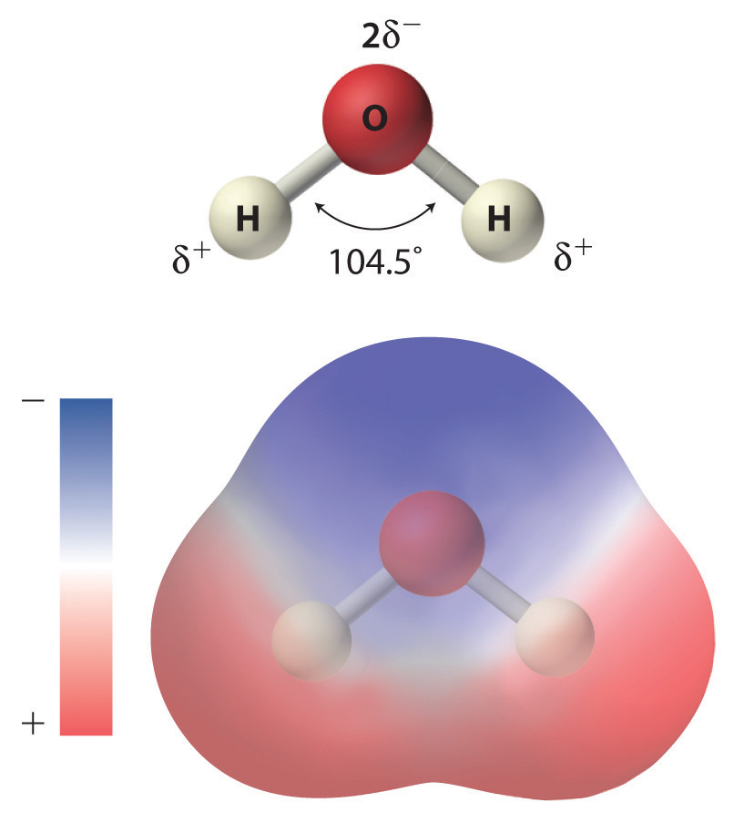
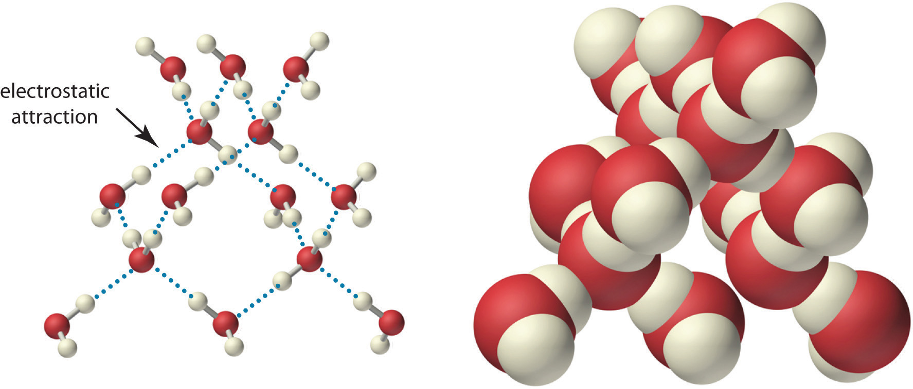
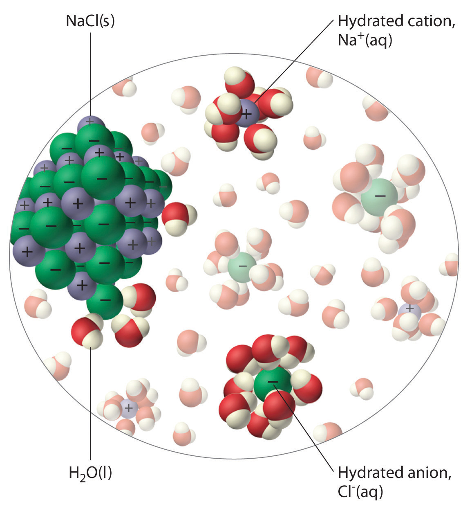
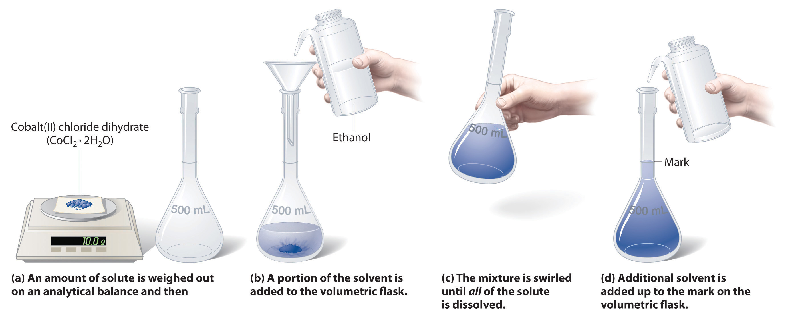
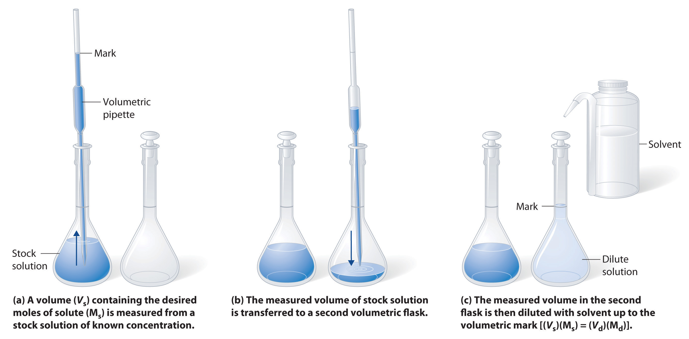
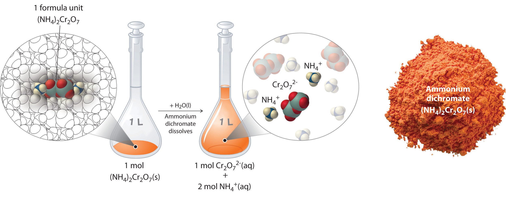
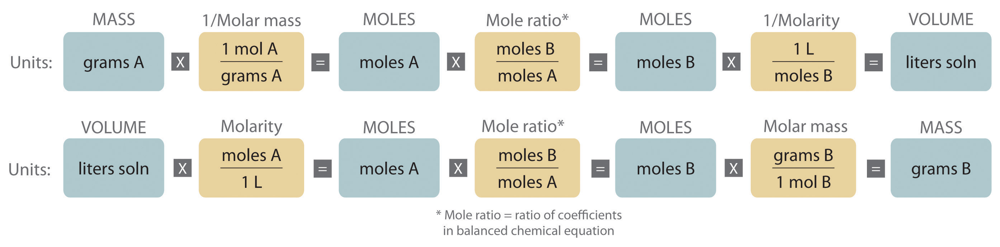
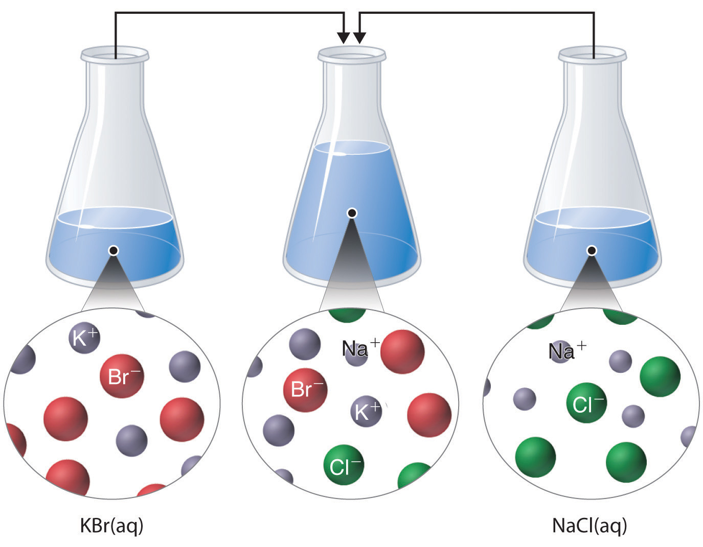
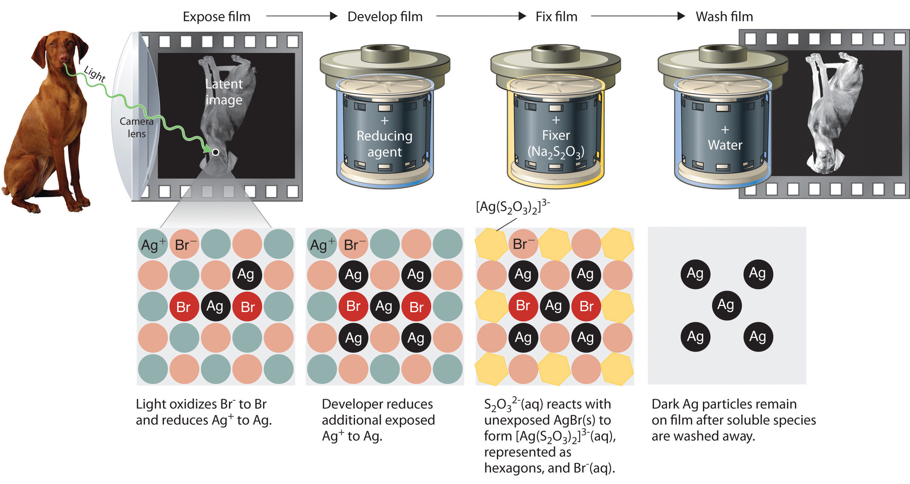

In Chapter 3 "Chemical Reactions", we described chemical reactions in general and introduced some techniques that are used to characterize them quantitatively. For the sake of simplicity, we discussed situations in which the reactants and the products of a given reaction were the only chemical species present. In reality, however, virtually every chemical reaction that takes place within and around us, such as the oxidation of foods to generate energy or the treatment of an upset stomach with an antacid tablet, occur in solution. In fact, many reactions must be carried out in solution and do not take place at all if the solid reactants are simply mixed.

The reaction of mercury(II) acetate with sodium iodide. When colorless aqueous solutions of each reactant are mixed, they produce a red precipitate, mercury(II) iodide, which is the result of an exchange reaction.
As you learned in Chapter 1 "Introduction to Chemistry", a solutionA homogeneous mixture of two or more substances in which solutes are dispersed uniformly throughout the solvent. is a homogeneous mixture in which substances present in lesser amounts, called solutesThe substance or substances present in lesser amounts in a solution., are dispersed uniformly throughout the substance in the greater amount, the solventThe substance present in the greater amount in a solution.. An aqueous solutionA solution in which water is the solvent. is a solution in which the solvent is water, whereas in a nonaqueous solution, the solvent is a substance other than water. Familiar examples of nonaqueous solvents are ethyl acetate, used in nail polish removers, and turpentine, used to clean paint brushes. In this chapter, we focus on reactions that occur in aqueous solution.
There are many reasons for carrying out reactions in solution. For a chemical reaction to occur, individual atoms, molecules, or ions must collide, and collisions between two solids, which are not dispersed at the atomic, molecular, or ionic level, do not occur at a significant rate. In addition, when the amount of a substance required for a reaction is so small that it cannot be weighed accurately, using a solution of that substance, in which the solute is dispersed in a much larger mass of solvent, enables chemists to measure its quantity with great precision. Chemists can also more effectively control the amount of heat consumed or produced in a reaction when the reaction occurs in solution, and sometimes the nature of the reaction itself can be controlled by the choice of solvent.
This chapter introduces techniques for preparing and analyzing aqueous solutions, for balancing equations that describe reactions in solution, and for solving problems using solution stoichiometry. By the time you complete this chapter, you will know enough about aqueous solutions to explain what causes acid rain, why acid rain is harmful, and how a Breathalyzer measures alcohol levels. You will also understand the chemistry of photographic development, be able to explain why rhubarb leaves are toxic, and learn about a possible chemical reason for the decline and fall of the Roman Empire.
The solvent in aqueous solutions is water, which makes up about 70% of the mass of the human body and is essential for life. Many of the chemical reactions that keep us alive depend on the interaction of water molecules with dissolved compounds. Moreover, as we will discuss in Chapter 5 "Energy Changes in Chemical Reactions", the presence of large amounts of water on Earth’s surface helps maintain its surface temperature in a range suitable for life. In this section, we describe some of the interactions of water with various substances and introduce you to the characteristics of aqueous solutions.
As shown in Figure 4.1 "The Polar Nature of Water", the individual water molecule consists of two hydrogen atoms bonded to an oxygen atom in a bent (V-shaped) structure. As is typical of group 16 elements, the oxygen atom in each O–H covalent bond attracts electrons more strongly than the hydrogen atom does. (For more information on periodic table groups and covalent bonding, see Chapter 2 "Molecules, Ions, and Chemical Formulas" and Chapter 7 "The Periodic Table and Periodic Trends".) Consequently, the oxygen and hydrogen nuclei do not equally share electrons. Instead, hydrogen atoms are electron poor compared with a neutral hydrogen atom and have a partial positive charge, which is indicated by δ+. The oxygen atom, in contrast, is more electron rich than a neutral oxygen atom, so it has a partial negative charge. This charge must be twice as large as the partial positive charge on each hydrogen for the molecule to have a net charge of zero. Thus its charge is indicated by 2δ−. This unequal distribution of charge creates a polar bondA chemical bond in which there is an unequal distribution of charge between the bonding atoms., in which one portion of the molecule carries a partial negative charge, while the other portion carries a partial positive charge (Figure 4.1 "The Polar Nature of Water"). Because of the arrangement of polar bonds in a water molecule, water is described as a polar substance.
Figure 4.1 The Polar Nature of Water
Each water molecule consists of two hydrogen atoms bonded to an oxygen atom in a bent (V-shaped) structure. Because the oxygen atom attracts electrons more strongly than the hydrogen atoms do, the oxygen atom is partially negatively charged (2δ−; blue) and the hydrogen atoms are partially positively charged (δ+; red). For the molecule to have a net charge of zero, the partial negative charge on oxygen must be twice as large as the partial positive charge on each hydrogen.
Because of the asymmetric charge distribution in the water molecule, adjacent water molecules are held together by attractive electrostatic (δ+…δ−) interactions between the partially negatively charged oxygen atom of one molecule and the partially positively charged hydrogen atoms of adjacent molecules (Figure 4.2 "The Structure of Liquid Water"). Energy is needed to overcome these electrostatic attractions. In fact, without them, water would evaporate at a much lower temperature, and neither Earth’s oceans nor we would exist!
Figure 4.2 The Structure of Liquid Water
Two views of a water molecule are shown: (a) a ball-and-stick structure and (b) a space-filling model. Water molecules are held together by electrostatic attractions (dotted lines) between the partially negatively charged oxygen atom of one molecule and the partially positively charged hydrogen atoms on adjacent molecules. As a result, the water molecules in liquid water form transient networks with structures similar to that shown. Because the interactions between water molecules are continually breaking and reforming, liquid water does not have a single fixed structure.
As you learned in Section 2.1 "Chemical Compounds", ionic compounds such as sodium chloride (NaCl) are also held together by electrostatic interactions—in this case, between oppositely charged ions in the highly ordered solid, where each ion is surrounded by ions of the opposite charge in a fixed arrangement. In contrast to an ionic solid, the structure of liquid water is not completely ordered because the interactions between molecules in a liquid are constantly breaking and reforming.
The unequal charge distribution in polar liquids such as water makes them good solvents for ionic compounds. When an ionic solid dissolves in water, the ions dissociate. That is, the partially negatively charged oxygen atoms of the H2O molecules surround the cations (Na+ in the case of NaCl), and the partially positively charged hydrogen atoms in H2O surround the anions (Cl−; Figure 4.3 "The Dissolution of Sodium Chloride in Water"). Individual cations and anions that are each surrounded by their own shell of water molecules are called hydrated ionsIndividual cations and anions that are each surrounded by their own shell of water molecules.. We can describe the dissolution of NaCl in water as
Equation 4.1
where (aq) indicates that Na+ and Cl− are hydrated ions.
Figure 4.3 The Dissolution of Sodium Chloride in Water
An ionic solid such as sodium chloride dissolves in water because of the electrostatic attraction between the cations (Na+) and the partially negatively charged oxygen atoms of water molecules, and between the anions (Cl−) and the partially positively charged hydrogen atoms of water.
Polar liquids are good solvents for ionic compounds.
When electricity, in the form of an electrical potential, is applied to a solution, ions in solution migrate toward the oppositely charged rod or plate to complete an electrical circuit, whereas neutral molecules in solution do not (Figure 4.4 "The Effect of Ions on the Electrical Conductivity of Water"). Thus solutions that contain ions conduct electricity, while solutions that contain only neutral molecules do not. Electrical current will flow through the circuit shown in Figure 4.4 "The Effect of Ions on the Electrical Conductivity of Water" and the bulb will glow only if ions are present. The lower the concentration of ions in solution, the weaker the current and the dimmer the glow. Pure water, for example, contains only very low concentrations of ions, so it is a poor electrical conductor.
Solutions that contain ions conduct electricity.
Figure 4.4 The Effect of Ions on the Electrical Conductivity of Water

An electrical current will flow and light the bulb only if the solution contains ions. (a) Pure water or an aqueous solution of a nonelectrolyte allows almost no current to flow, and the bulb does not light. (b) A weak electrolyte produces a few ions, allowing some current to flow and the bulb to glow dimly. (c) A strong electrolyte produces many ions, allowing more current to flow and the bulb to shine brightly.
An electrolyteAny compound that can form ions when dissolved in water (c.f. nonelectrolytes). Electrolytes may be strong or weak. is any compound that can form ions when it dissolves in water. When strong electrolytesAn electrolyte that dissociates completely into ions when dissolved in water, thus producing an aqueous solution that conducts electricity very well. dissolve, the constituent ions dissociate completely due to strong electrostatic interactions with the solvent, producing aqueous solutions that conduct electricity very well (Figure 4.4 "The Effect of Ions on the Electrical Conductivity of Water"). Examples include ionic compounds such as barium chloride (BaCl2) and sodium hydroxide (NaOH), which are both strong electrolytes and dissociate as follows:
Equation 4.2
Equation 4.3
The single arrows from reactant to products in Equation 4.2 and Equation 4.3 indicate that dissociation is complete.
When weak electrolytesA compound that produces relatively few ions when dissolved in water, thus producing an aqueous solution that conducts electricity poorly. dissolve, they produce relatively few ions in solution. This does not mean that the compounds do not dissolve readily in water; many weak electrolytes contain polar bonds and are therefore very soluble in a polar solvent such as water. They do not completely dissociate to form ions, however, because of their weaker electrostatic interactions with the solvent. Because very few of the dissolved particles are ions, aqueous solutions of weak electrolytes do not conduct electricity as well as solutions of strong electrolytes. One such compound is acetic acid (CH3CO2H), which contains the –CO2H unit. Although it is soluble in water, it is a weak acid and therefore also a weak electrolyte. Similarly, ammonia (NH3) is a weak base and therefore a weak electrolyte. The behavior of weak acids and weak bases will be described in more detail when we discuss acid–base reactions in Section 4.6 "Acid–Base Reactions".
NonelectrolytesA substance that dissolves in water to form neutral molecules and has essentially no effect on electrical conductivity. that dissolve in water do so as neutral molecules and thus have essentially no effect on conductivity. Examples of nonelectrolytes that are very soluble in water but that are essentially nonconductive are ethanol, ethylene glycol, glucose, and sucrose, all of which contain the –OH group that is characteristic of alcohols. In Chapter 8 "Ionic versus Covalent Bonding", we will discuss why alcohols and carboxylic acids behave differently in aqueous solution; for now, however, you can simply look for the presence of the –OH and –CO2H groups when trying to predict whether a substance is a strong electrolyte, a weak electrolyte, or a nonelectrolyte. In addition to alcohols, two other classes of organic compounds that are nonelectrolytes are aldehydesA class of organic compounds that has the general form RCHO, in which the carbon atom of the carbonyl group is bonded to a hydrogen atom and an R group. The R group may be either another hydrogen atom or an alkyl group (c.f. ketone). and ketonesA class of organic compounds with the general form RC(O)R’, in which the carbon atom of the carbonyl group is bonded to two alkyl groups (c.f. aldehyde). The alkyl groups may be the same or different., whose general structures are shown here. The distinctions between soluble and insoluble substances and between strong, weak, and nonelectrolytes are illustrated in Figure 4.5 "The Difference between Soluble and Insoluble Compounds (a) and Strong, Weak, and Nonelectrolytes (b)".
Ionic substances and carboxylic acids are electrolytes; alcohols, aldehydes, and ketones are nonelectrolytes.
General structure of an aldehyde and a ketone. Notice that both contain the C=O group.
Figure 4.5 The Difference between Soluble and Insoluble Compounds (a) and Strong, Weak, and Nonelectrolytes (b)

When a soluble compound dissolves, its constituent atoms, molecules, or ions disperse throughout the solvent. In contrast, the constituents of an insoluble compound remain associated with one another in the solid. A soluble compound is a strong electrolyte if it dissociates completely into ions, a weak electrolyte if it dissociates only slightly into ions, and a nonelectrolyte if it dissolves to produce only neutral molecules.
Predict whether each compound is a strong electrolyte, a weak electrolyte, or a nonelectrolyte in water.
formaldehyde
Given: compound
Asked for: relative ability to form ions in water
Strategy:
A Classify the compound as ionic or covalent.
B If the compound is ionic and dissolves, it is a strong electrolyte that will dissociate in water completely to produce a solution that conducts electricity well. If the compound is covalent and organic, determine whether it contains the carboxylic acid group. If the compound contains this group, it is a weak electrolyte. If not, it is a nonelectrolyte.
Solution:
Exercise
Predict whether each compound is a strong electrolyte, a weak electrolyte, or a nonelectrolyte in water.
(CH3)2CHOH (2-propanol)
Answer:
Most chemical reactions are carried out in solutions, which are homogeneous mixtures of two or more substances. In a solution, a solute (the substance present in the lesser amount) is dispersed in a solvent (the substance present in the greater amount). Aqueous solutions contain water as the solvent, whereas nonaqueous solutions have solvents other than water.
Polar substances, such as water, contain asymmetric arrangements of polar bonds, in which electrons are shared unequally between bonded atoms. Polar substances and ionic compounds tend to be most soluble in water because they interact favorably with its structure. In aqueous solution, dissolved ions become hydrated; that is, a shell of water molecules surrounds them.
Substances that dissolve in water can be categorized according to whether the resulting aqueous solutions conduct electricity. Strong electrolytes dissociate completely into ions to produce solutions that conduct electricity well. Weak electrolytes produce a relatively small number of ions, resulting in solutions that conduct electricity poorly. Nonelectrolytes dissolve as uncharged molecules and have no effect on the electrical conductivity of water.
What are the advantages to carrying out a reaction in solution rather than simply mixing the pure reactants?
What types of compounds dissolve in polar solvents?
Describe the charge distribution in liquid water. How does this distribution affect its physical properties?
Must a molecule have an asymmetric charge distribution to be polar? Explain your answer.
Why are many ionic substances soluble in water?
Explain the phrase like dissolves like.
What kinds of covalent compounds are soluble in water?
Why do most aromatic hydrocarbons have only limited solubility in water? Would you expect their solubility to be higher, lower, or the same in ethanol compared with water? Why?
Predict whether each compound will dissolve in water and explain why.
Predict whether each compound will dissolve in water and explain why.
Given water and toluene, predict which is the better solvent for each compound and explain your reasoning.
Of water and toluene, predict which is the better solvent for each compound and explain your reasoning.
Compound A is divided into three equal samples. The first sample does not dissolve in water, the second sample dissolves only slightly in ethanol, and the third sample dissolves completely in toluene. What does this suggest about the polarity of A?
You are given a mixture of three solid compounds—A, B, and C—and are told that A is a polar compound, B is slightly polar, and C is nonpolar. Suggest a method for separating these three compounds.
A laboratory technician is given a sample that contains only sodium chloride, sucrose, and cyclodecanone (a ketone). You must tell the technician how to separate these three compounds from the mixture. What would you suggest?
Many over-the-counter drugs are sold as ethanol/water solutions rather than as purely aqueous solutions. Give a plausible reason for this practice.
What distinguishes a weak electrolyte from a strong electrolyte?
Which organic groups result in aqueous solutions that conduct electricity?
It is considered highly dangerous to splash barefoot in puddles during a lightning storm. Why?
Which solution(s) would you expect to conduct electricity well? Explain your reasoning.
Which solution(s) would you expect to conduct electricity well? Explain your reasoning.
Which of the following is a strong electrolyte, a weak electrolyte, or a nonelectrolyte in an aqueous solution? Explain your reasoning.
Which of the following is a strong electrolyte, a weak electrolyte, or a nonelectrolyte in an aqueous solution? Explain your reasoning.
Which of the following is a strong electrolyte, a weak electrolyte, or a nonelectrolyte in aqueous solution? Explain your reasoning.
Ionic compounds such as NaCl are held together by electrostatic interactions between oppositely charged ions in the highly ordered solid. When an ionic compound dissolves in water, the partially negatively charged oxygen atoms of the H2O molecules surround the cations, and the partially positively charged hydrogen atoms in H2O surround the anions. The favorable electrostatic interactions between water and the ions compensate for the loss of the electrostatic interactions between ions in the solid.
An electrolyte is any compound that can form ions when it dissolves in water. When a strong electrolyte dissolves in water, it dissociates completely to give the constituent ions. In contrast, when a weak electrolyte dissolves in water, it produces relatively few ions in solution.
All of us have a qualitative idea of what is meant by concentration. Anyone who has made instant coffee or lemonade knows that too much powder gives a strongly flavored, highly concentrated drink, whereas too little results in a dilute solution that may be hard to distinguish from water. In chemistry, the concentrationThe quantity of solute that is dissolved in a particular quantity of solvent or solution. of a solution describes the quantity of a solute that is contained in a particular quantity of solvent or solution. Knowing the concentration of solutes is important in controlling the stoichiometry of reactants for reactions that occur in solution. Chemists use many different ways to define concentrations, some of which are described in this section.
The most common unit of concentration is molarity, which is also the most useful for calculations involving the stoichiometry of reactions in solution. The molarity (M)A common unit of concentration that is the number of moles of solute present in exactly 1 L of solution of a solution is the number of moles of solute present in exactly 1 L of solution. Molarity is also the number of millimoles of solute present in exactly 1 mL of solution:
Equation 4.4
The units of molarity are therefore moles per liter of solution (mol/L), abbreviated as M. An aqueous solution that contains 1 mol (342 g) of sucrose in enough water to give a final volume of 1.00 L has a sucrose concentration of 1.00 mol/L or 1.00 M. In chemical notation, square brackets around the name or formula of the solute represent the concentration of a solute. So
[sucrose] = 1.00 Mis read as “the concentration of sucrose is 1.00 molar.” The relationships between volume, molarity, and moles may be expressed as either
Equation 4.5
or
Equation 4.6
Example 2 illustrates the use of Equation 4.5 and Equation 4.6.
Calculate the number of moles of sodium hydroxide (NaOH) in 2.50 L of 0.100 M NaOH.
Given: identity of solute and volume and molarity of solution
Asked for: amount of solute in moles
Strategy:
Use either Equation 4.5 or Equation 4.6, depending on the units given in the problem.
Solution:
Because we are given the volume of the solution in liters and are asked for the number of moles of substance, Equation 4.5 is more useful:
Exercise
Calculate the number of millimoles of alanine, a biologically important molecule, in 27.2 mL of 1.53 M alanine.
Answer: 41.6 mmol
Concentrations are often reported on a mass-to-mass (m/m) basis or on a mass-to-volume (m/v) basis, particularly in clinical laboratories and engineering applications. A concentration expressed on an m/m basis is equal to the number of grams of solute per gram of solution; a concentration on an m/v basis is the number of grams of solute per milliliter of solution. Each measurement can be expressed as a percentage by multiplying the ratio by 100; the result is reported as percent m/m or percent m/v. The concentrations of very dilute solutions are often expressed in parts per million (ppm), which is grams of solute per 106 g of solution, or in parts per billion (ppb), which is grams of solute per 109 g of solution. For aqueous solutions at 20°C, 1 ppm corresponds to 1 μg per milliliter, and 1 ppb corresponds to 1 ng per milliliter. These concentrations and their units are summarized in Table 4.1 "Common Units of Concentration".
Table 4.1 Common Units of Concentration
| Concentration | Units |
|---|---|
| m/m | g of solute/g of solution |
| m/v | g of solute/mL of solution |
| ppm | g of solute/106 g of solution |
| μg/mL | |
| ppb | g of solute/109 g of solution |
| ng/mL |
To prepare a solution that contains a specified concentration of a substance, it is necessary to dissolve the desired number of moles of solute in enough solvent to give the desired final volume of solution. Figure 4.6 "Preparation of a Solution of Known Concentration Using a Solid Solute" illustrates this procedure for a solution of cobalt(II) chloride dihydrate in ethanol. Note that the volume of the solvent is not specified. Because the solute occupies space in the solution, the volume of the solvent needed is almost always less than the desired volume of solution. For example, if the desired volume were 1.00 L, it would be incorrect to add 1.00 L of water to 342 g of sucrose because that would produce more than 1.00 L of solution. As shown in Figure 4.7 "Preparation of 250 mL of a Solution of (NH", for some substances this effect can be significant, especially for concentrated solutions.
Figure 4.6 Preparation of a Solution of Known Concentration Using a Solid Solute
Figure 4.7 Preparation of 250 mL of a Solution of (NH4)2Cr2O7 in Water

The solute occupies space in the solution, so less than 250 mL of water are needed to make 250 mL of solution.
The solution in Figure 4.6 "Preparation of a Solution of Known Concentration Using a Solid Solute" contains 10.0 g of cobalt(II) chloride dihydrate, CoCl2·2H2O, in enough ethanol to make exactly 500 mL of solution. What is the molar concentration of CoCl2·2H2O?
Given: mass of solute and volume of solution
Asked for: concentration (M)
Strategy:
To find the number of moles of CoCl2·2H2O, divide the mass of the compound by its molar mass. Calculate the molarity of the solution by dividing the number of moles of solute by the volume of the solution in liters.
Solution:
The molar mass of CoCl2·2H2O is 165.87 g/mol. Therefore,
The volume of the solution in liters is
Molarity is the number of moles of solute per liter of solution, so the molarity of the solution is
Exercise
The solution shown in Figure 4.7 "Preparation of 250 mL of a Solution of (NH" contains 90.0 g of (NH4)2Cr2O7 in enough water to give a final volume of exactly 250 mL. What is the molar concentration of ammonium dichromate?
Answer: (NH4)2Cr2O7 = 1.43 M
To prepare a particular volume of a solution that contains a specified concentration of a solute, we first need to calculate the number of moles of solute in the desired volume of solution using the relationship shown in Equation 4.5. We then convert the number of moles of solute to the corresponding mass of solute needed. This procedure is illustrated in Example 4.
The so-called D5W solution used for the intravenous replacement of body fluids contains 0.310 M glucose. (D5W is an approximately 5% solution of dextrose [the medical name for glucose] in water.) Calculate the mass of glucose necessary to prepare a 500 mL pouch of D5W. Glucose has a molar mass of 180.16 g/mol.
Given: molarity, volume, and molar mass of solute
Asked for: mass of solute
Strategy:
A Calculate the number of moles of glucose contained in the specified volume of solution by multiplying the volume of the solution by its molarity.
B Obtain the mass of glucose needed by multiplying the number of moles of the compound by its molar mass.
Solution:
A We must first calculate the number of moles of glucose contained in 500 mL of a 0.310 M solution:
B We then convert the number of moles of glucose to the required mass of glucose:
Exercise
Another solution commonly used for intravenous injections is normal saline, a 0.16 M solution of sodium chloride in water. Calculate the mass of sodium chloride needed to prepare 250 mL of normal saline solution.
Answer: 2.3 g NaCl
A solution of a desired concentration can also be prepared by diluting a small volume of a more concentrated solution with additional solvent. A stock solutionA commercially prepared solution of known concentration., which is a commercially prepared solution of known concentration, is often used for this purpose. Diluting a stock solution is preferred because the alternative method, weighing out tiny amounts of solute, is difficult to carry out with a high degree of accuracy. Dilution is also used to prepare solutions from substances that are sold as concentrated aqueous solutions, such as strong acids.
The procedure for preparing a solution of known concentration from a stock solution is shown in Figure 4.8 "Preparation of a Solution of Known Concentration by Diluting a Stock Solution". It requires calculating the number of moles of solute desired in the final volume of the more dilute solution and then calculating the volume of the stock solution that contains this amount of solute. Remember that diluting a given quantity of stock solution with solvent does not change the number of moles of solute present. The relationship between the volume and concentration of the stock solution and the volume and concentration of the desired diluted solution is therefore
Equation 4.7
(Vs)(Ms) = moles of solute = (Vd)(Md)where the subscripts s and d indicate the stock and dilute solutions, respectively. Example 5 demonstrates the calculations involved in diluting a concentrated stock solution.
Figure 4.8 Preparation of a Solution of Known Concentration by Diluting a Stock Solution
(a) A volume (Vs) containing the desired moles of solute (Ms) is measured from a stock solution of known concentration. (b) The measured volume of stock solution is transferred to a second volumetric flask. (c) The measured volume in the second flask is then diluted with solvent up to the volumetric mark [(Vs)(Ms) = (Vd)(Md)].
What volume of a 3.00 M glucose stock solution is necessary to prepare 2500 mL of the D5W solution in Example 4?
Given: volume and molarity of dilute solution
Asked for: volume of stock solution
Strategy:
A Calculate the number of moles of glucose contained in the indicated volume of dilute solution by multiplying the volume of the solution by its molarity.
B To determine the volume of stock solution needed, divide the number of moles of glucose by the molarity of the stock solution.
Solution:
A The D5W solution in Example 4 was 0.310 M glucose. We begin by using Equation 4.7 to calculate the number of moles of glucose contained in 2500 mL of the solution:
B We must now determine the volume of the 3.00 M stock solution that contains this amount of glucose:
In determining the volume of stock solution that was needed, we had to divide the desired number of moles of glucose by the concentration of the stock solution to obtain the appropriate units. Also, the number of moles of solute in 258 mL of the stock solution is the same as the number of moles in 2500 mL of the more dilute solution; only the amount of solvent has changed. The answer we obtained makes sense: diluting the stock solution about tenfold increases its volume by about a factor of 10 (258 mL → 2500 mL). Consequently, the concentration of the solute must decrease by about a factor of 10, as it does (3.00 M → 0.310 M).
We could also have solved this problem in a single step by solving Equation 4.7 for Vs and substituting the appropriate values:
As we have noted, there is often more than one correct way to solve a problem.
Exercise
What volume of a 5.0 M NaCl stock solution is necessary to prepare 500 mL of normal saline solution (0.16 M NaCl)?
Answer: 16 mL
In Example 3, you calculated that the concentration of a solution containing 90.00 g of ammonium dichromate in a final volume of 250 mL is 1.43 M. Let’s consider in more detail exactly what that means. Ammonium dichromate is an ionic compound that contains two NH4+ ions and one Cr2O72− ion per formula unit. Like other ionic compounds, it is a strong electrolyte that dissociates in aqueous solution to give hydrated NH4+ and Cr2O72− ions:
Equation 4.8
Thus 1 mol of ammonium dichromate formula units dissolves in water to produce 1 mol of Cr2O72− anions and 2 mol of NH4+ cations (see Figure 4.9 "Dissolution of 1 mol of an Ionic Compound").
Figure 4.9 Dissolution of 1 mol of an Ionic Compound
In this case, dissolving 1 mol of (NH4)2Cr2O7 produces a solution that contains 1 mol of Cr2O72− ions and 2 mol of NH4+ ions. (Water molecules are omitted from a molecular view of the solution for clarity.)
When we carry out a chemical reaction using a solution of a salt such as ammonium dichromate, we need to know the concentration of each ion present in the solution. If a solution contains 1.43 M (NH4)2Cr2O7, then the concentration of Cr2O72− must also be 1.43 M because there is one Cr2O72− ion per formula unit. However, there are two NH4+ ions per formula unit, so the concentration of NH4+ ions is 2 × 1.43 M = 2.86 M. Because each formula unit of (NH4)2Cr2O7 produces three ions when dissolved in water (2NH4+ + 1Cr2O72−), the total concentration of ions in the solution is 3 × 1.43 M = 4.29 M.
What are the concentrations of all species derived from the solutes in these aqueous solutions?
Given: molarity
Asked for: concentrations
Strategy:
A Classify each compound as either a strong electrolyte or a nonelectrolyte.
B If the compound is a nonelectrolyte, its concentration is the same as the molarity of the solution. If the compound is a strong electrolyte, determine the number of each ion contained in one formula unit. Find the concentration of each species by multiplying the number of each ion by the molarity of the solution.
Solution:
Sodium hydroxide is an ionic compound that is a strong electrolyte (and a strong base) in aqueous solution:
B Because each formula unit of NaOH produces one Na+ ion and one OH− ion, the concentration of each ion is the same as the concentration of NaOH: [Na+] = 0.21 M and [OH−] = 0.21 M.
A The formula (CH3)2CHOH represents 2-propanol (isopropyl alcohol) and contains the –OH group, so it is an alcohol. Recall from Section 4.1 "Aqueous Solutions" that alcohols are covalent compounds that dissolve in water to give solutions of neutral molecules. Thus alcohols are nonelectrolytes.
B The only solute species in solution is therefore (CH3)2CHOH molecules, so [(CH3)2CHOH] = 3.7 M.
A Indium nitrate is an ionic compound that contains In3+ ions and NO3− ions, so we expect it to behave like a strong electrolyte in aqueous solution:
B One formula unit of In(NO3)3 produces one In3+ ion and three NO3− ions, so a 0.032 M In(NO3)3 solution contains 0.032 M In3+ and 3 × 0.032 M = 0.096 M NO3–—that is, [In3+] = 0.032 M and [NO3−] = 0.096 M.
Exercise
What are the concentrations of all species derived from the solutes in these aqueous solutions?
Answer:
definition of molarity
relationship among volume, molarity, and moles
relationship between volume and concentration of stock and dilute solutions
Equation 4.7: (Vs)(Ms) = moles of solute = (Vd)(Md)
The concentration of a substance is the quantity of solute present in a given quantity of solution. Concentrations are usually expressed as molarity, the number of moles of solute in 1 L of solution. Solutions of known concentration can be prepared either by dissolving a known mass of solute in a solvent and diluting to a desired final volume or by diluting the appropriate volume of a more concentrated solution (a stock solution) to the desired final volume.
Which of the representations best corresponds to a 1 M aqueous solution of each compound? Justify your answers.
Na2SO4
Which of the representations shown in Problem 1 best corresponds to a 1 M aqueous solution of each compound? Justify your answers.
Would you expect a 1.0 M solution of CaCl2 to be a better conductor of electricity than a 1.0 M solution of NaCl? Why or why not?
An alternative way to define the concentration of a solution is molality, abbreviated m. Molality is defined as the number of moles of solute in 1 kg of solvent. How is this different from molarity? Would you expect a 1 M solution of sucrose to be more or less concentrated than a 1 m solution of sucrose? Explain your answer.
What are the advantages of using solutions for quantitative calculations?
If the amount of a substance required for a reaction is too small to be weighed accurately, the use of a solution of the substance, in which the solute is dispersed in a much larger mass of solvent, allows chemists to measure the quantity of the substance more accurately.
Calculate the number of grams of solute in 1.000 L of each solution.
Calculate the number of grams of solute in 1.000 L of each solution.
If all solutions contain the same solute, which solution contains the greater mass of solute?
Complete the following table for 500 mL of solution.
| Compound | Mass (g) | Moles | Concentration (M) |
|---|---|---|---|
| calcium sulfate | 4.86 | ||
| acetic acid | 3.62 | ||
| hydrogen iodide dihydrate | 1.273 | ||
| barium bromide | 3.92 | ||
| glucose | 0.983 | ||
| sodium acetate | 2.42 |
What is the concentration of each species present in the following aqueous solutions?
What is the concentration of each species present in the following aqueous solutions?
What is the molar concentration of each solution?
What is the molar concentration of each solution?
Give the concentration of each reactant in the following equations, assuming 20.0 g of each and a solution volume of 250 mL for each reactant.
An experiment required 200.0 mL of a 0.330 M solution of Na2CrO4. A stock solution of Na2CrO4 containing 20.0% solute by mass with a density of 1.19 g/cm3 was used to prepare this solution. Describe how to prepare 200.0 mL of a 0.330 M solution of Na2CrO4 using the stock solution.
Calcium hypochlorite [Ca(OCl)2] is an effective disinfectant for clothing and bedding. If a solution has a Ca(OCl)2 concentration of 3.4 g per 100 mL of solution, what is the molarity of hypochlorite?
Phenol (C6H5OH) is often used as an antiseptic in mouthwashes and throat lozenges. If a mouthwash has a phenol concentration of 1.5 g per 100 mL of solution, what is the molarity of phenol?
If a tablet containing 100 mg of caffeine (C8H10N4O2) is dissolved in water to give 10.0 oz of solution, what is the molar concentration of caffeine in the solution?
A certain drug label carries instructions to add 10.0 mL of sterile water, stating that each milliliter of the resulting solution will contain 0.500 g of medication. If a patient has a prescribed dose of 900.0 mg, how many milliliters of the solution should be administered?
0.48 M ClO−
1.74 × 10−3 M caffeine
Quantitative calculations involving reactions in solution are carried out in the same manner as we discussed in Chapter 3 "Chemical Reactions". Instead of masses, however, we use volumes of solutions of known concentration to determine the number of moles of reactants. Whether we are dealing with volumes of solutions of reactants or masses of reactants, the coefficients in the balanced chemical equation tell us the number of moles of each reactant needed and the number of moles of each product that can be produced.
An expanded version of the flowchart for stoichiometric calculations illustrated in Figure 3.5 "Steps for Obtaining an Empirical Formula from Combustion Analysis" is shown in Figure 4.10 "An Expanded Flowchart for Stoichiometric Calculations". We can use the balanced chemical equation for the reaction and either the masses of solid reactants and products or the volumes of solutions of reactants and products to determine the amounts of other species, as illustrated in Example 7, Example 8, and Example 9.
Figure 4.10 An Expanded Flowchart for Stoichiometric Calculations
Either the masses or the volumes of solutions of reactants and products can be used to determine the amounts of other species in a balanced chemical equation.
The balanced chemical equation for a reaction and either the masses of solid reactants and products or the volumes of solutions of reactants and products can be used in stoichiometric calculations.
Gold is extracted from its ores by treatment with an aqueous cyanide solution, which causes a reaction that forms the soluble [Au(CN)2]− ion. Gold is then recovered by reduction with metallic zinc according to the following equation:
Zn(s) + 2[Au(CN)2]−(aq) → [Zn(CN)4]2−(aq) + 2Au(s)What mass of gold would you expect to recover from 400.0 L of a 3.30 × 10−4 M solution of [Au(CN)2]−?
Given: chemical equation and molarity and volume of reactant
Asked for: mass of product
Strategy:
A Check the chemical equation to make sure it is balanced as written; balance if necessary. Then calculate the number of moles of [Au(CN)2]− present by multiplying the volume of the solution by its concentration.
B From the balanced chemical equation, use a mole ratio to calculate the number of moles of gold that can be obtained from the reaction. To calculate the mass of gold recovered, multiply the number of moles of gold by its molar mass.
Solution:
A The equation is balanced as written, so we can proceed to the stoichiometric calculation. We can adapt Figure 4.10 "An Expanded Flowchart for Stoichiometric Calculations" for this particular problem as follows:
As indicated in the strategy, we start by calculating the number of moles of [Au(CN)2]− present in the solution from the volume and concentration of the [Au(CN)2]− solution:
B Because the coefficients of gold and the [Au(CN)2]− ion are the same in the balanced chemical equation, if we assume that Zn(s) is present in excess, the number of moles of gold produced is the same as the number of moles of [Au(CN)2]− we started with (i.e., 0.132 mol of Au). The problem asks for the mass of gold that can be obtained, so we need to convert the number of moles of gold to the corresponding mass using the molar mass of gold:
At a 2011 market price of over $1400 per troy ounce (31.10 g), this amount of gold is worth $1170.
Exercise
What mass of solid lanthanum(III) oxalate nonahydrate [La2(C2O4)3·9H2O] can be obtained from 650 mL of a 0.0170 M aqueous solution of LaCl3 by adding a stoichiometric amount of sodium oxalate?
Answer: 3.89 g
The concept of limiting reactants applies to reactions that are carried out in solution as well as to reactions that involve pure substances. If all the reactants but one are present in excess, then the amount of the limiting reactant may be calculated as illustrated in Example 8.
Because the consumption of alcoholic beverages adversely affects the performance of tasks that require skill and judgment, in most countries it is illegal to drive while under the influence of alcohol. In almost all US states, a blood alcohol level of 0.08% by volume is considered legally drunk. Higher levels cause acute intoxication (0.20%), unconsciousness (about 0.30%), and even death (about 0.50%). The Breathalyzer is a portable device that measures the ethanol concentration in a person’s breath, which is directly proportional to the blood alcohol level. The reaction used in the Breathalyzer is the oxidation of ethanol by the dichromate ion:
When a measured volume (52.5 mL) of a suspect’s breath is bubbled through a solution of excess potassium dichromate in dilute sulfuric acid, the ethanol is rapidly absorbed and oxidized to acetic acid by the dichromate ions. In the process, the chromium atoms in some of the Cr2O72− ions are reduced from Cr6+ to Cr3+. In the presence of Ag+ ions that act as a catalyst, the reaction is complete in less than a minute. Because the Cr2O72− ion (the reactant) is yellow-orange and the Cr3+ ion (the product) forms a green solution, the amount of ethanol in the person’s breath (the limiting reactant) can be determined quite accurately by comparing the color of the final solution with the colors of standard solutions prepared with known amounts of ethanol.

A Breathalyzer ampul before (a) and after (b) ethanol is added. When a measured volume of a suspect’s breath is bubbled through the solution, the ethanol is oxidized to acetic acid, and the solution changes color from yellow-orange to green. The intensity of the green color indicates the amount of ethanol in the sample.
A typical Breathalyzer ampul contains 3.0 mL of a 0.25 mg/mL solution of K2Cr2O7 in 50% H2SO4 as well as a fixed concentration of AgNO3 (typically 0.25 mg/mL is used for this purpose). How many grams of ethanol must be present in 52.5 mL of a person’s breath to convert all the Cr6+ to Cr3+?
Given: volume and concentration of one reactant
Asked for: mass of other reactant needed for complete reaction
Strategy:
A Calculate the number of moles of Cr2O72− ion in 1 mL of the Breathalyzer solution by dividing the mass of K2Cr2O7 by its molar mass.
B Find the total number of moles of Cr2O72− ion in the Breathalyzer ampul by multiplying the number of moles contained in 1 mL by the total volume of the Breathalyzer solution (3.0 mL).
C Use the mole ratios from the balanced chemical equation to calculate the number of moles of C2H5OH needed to react completely with the number of moles of Cr2O72− ions present. Then find the mass of C2H5OH needed by multiplying the number of moles of C2H5OH by its molar mass.
Solution:
A In any stoichiometry problem, the first step is always to calculate the number of moles of each reactant present. In this case, we are given the mass of K2Cr2O7 in 1 mL of solution, which we can use to calculate the number of moles of K2Cr2O7 contained in 1 mL:
B Because 1 mol of K2Cr2O7 produces 1 mol of Cr2O72− when it dissolves, each milliliter of solution contains 8.5 × 10−7 mol of Cr2O72−. The total number of moles of Cr2O72− in a 3.0 mL Breathalyzer ampul is thus
C The balanced chemical equation tells us that 3 mol of C2H5OH is needed to consume 2 mol of Cr2O72− ion, so the total number of moles of C2H5OH required for complete reaction is
As indicated in the strategy, this number can be converted to the mass of C2H5OH using its molar mass:
Thus 1.8 × 10−4 g or 0.18 mg of C2H5OH must be present. Experimentally, it is found that this value corresponds to a blood alcohol level of 0.7%, which is usually fatal.
Exercise
The compound para-nitrophenol (molar mass = 139 g/mol) reacts with sodium hydroxide in aqueous solution to generate a yellow anion via the reaction
Because the amount of para-nitrophenol is easily estimated from the intensity of the yellow color that results when excess NaOH is added, reactions that produce para-nitrophenol are commonly used to measure the activity of enzymes, the catalysts in biological systems. What volume of 0.105 M NaOH must be added to 50.0 mL of a solution containing 7.20 × 10−4 g of para-nitrophenol to ensure that formation of the yellow anion is complete?
Answer: 4.93 × 10−5 L or 49.3 μL
In Example 7 and Example 8, the identity of the limiting reactant has been apparent: [Au(CN)2]−, LaCl3, ethanol, and para-nitrophenol. When the limiting reactant is not apparent, we can determine which reactant is limiting by comparing the molar amounts of the reactants with their coefficients in the balanced chemical equation, just as we did in Chapter 3 "Chemical Reactions", Section 3.4 "Mass Relationships in Chemical Equations". The only difference is that now we use the volumes and concentrations of solutions of reactants rather than the masses of reactants to calculate the number of moles of reactants, as illustrated in Example 9.
When aqueous solutions of silver nitrate and potassium dichromate are mixed, an exchange reaction occurs, and silver dichromate is obtained as a red solid. The overall chemical equation for the reaction is as follows:
2AgNO3(aq) + K2Cr2O7(aq) → Ag2Cr2O7(s) + 2KNO3(aq)What mass of Ag2Cr2O7 is formed when 500 mL of 0.17 M K2Cr2O7 are mixed with 250 mL of 0.57 M AgNO3?
Given: balanced chemical equation and volume and concentration of each reactant
Asked for: mass of product
Strategy:
A Calculate the number of moles of each reactant by multiplying the volume of each solution by its molarity.
B Determine which reactant is limiting by dividing the number of moles of each reactant by its stoichiometric coefficient in the balanced chemical equation.
C Use mole ratios to calculate the number of moles of product that can be formed from the limiting reactant. Multiply the number of moles of the product by its molar mass to obtain the corresponding mass of product.
Solution:
A The balanced chemical equation tells us that 2 mol of AgNO3(aq) reacts with 1 mol of K2Cr2O7(aq) to form 1 mol of Ag2Cr2O7(s) (Figure 4.11 "What Happens at the Molecular Level When Solutions of AgNO"). The first step is to calculate the number of moles of each reactant in the specified volumes:
B Now we can determine which reactant is limiting by dividing the number of moles of each reactant by its stoichiometric coefficient:
Because 0.070 < 0.085, we know that AgNO3 is the limiting reactant.
C Each mole of Ag2Cr2O7 formed requires 2 mol of the limiting reactant (AgNO3), so we can obtain only 0.14/2 = 0.070 mol of Ag2Cr2O7. Finally, we convert the number of moles of Ag2Cr2O7 to the corresponding mass:
Figure 4.11 What Happens at the Molecular Level When Solutions of AgNO3 and K2Cr2O7 Are Mixed

The Ag+ and Cr2O72− ions form a red precipitate of solid Ag2Cr2O7, while the K+ and NO3− ions remain in solution. (Water molecules are omitted from molecular views of the solutions for clarity.)
Exercise
Aqueous solutions of sodium bicarbonate and sulfuric acid react to produce carbon dioxide according to the following equation:
2NaHCO3(aq) + H2SO4(aq) → 2CO2(g) + Na2SO4(aq) + 2H2O(l)If 13.0 mL of 3.0 M H2SO4 are added to 732 mL of 0.112 M NaHCO3, what mass of CO2 is produced?
Answer: 3.4 g
Quantitative calculations that involve the stoichiometry of reactions in solution use volumes of solutions of known concentration instead of masses of reactants or products. The coefficients in the balanced chemical equation tell how many moles of reactants are needed and how many moles of product can be produced.
What information is required to determine the mass of solute in a solution if you know the molar concentration of the solution?
Is it possible for one reactant to be limiting in a reaction that does not go to completion?
Refer to the Breathalyzer test described in Example 8. How much ethanol must be present in 89.5 mL of a person’s breath to consume all the potassium dichromate in a Breathalyzer ampul containing 3.0 mL of a 0.40 mg/mL solution of potassium dichromate?
Phosphoric acid and magnesium hydroxide react to produce magnesium phosphate and water. If 45.00 mL of 1.50 M phosphoric acid are used in the reaction, how many grams of magnesium hydroxide are needed for the reaction to go to completion?
Barium chloride and sodium sulfate react to produce sodium chloride and barium sulfate. If 50.00 mL of 2.55 M barium chloride are used in the reaction, how many grams of sodium sulfate are needed for the reaction to go to completion?
How many grams of sodium phosphate are obtained in solution from the reaction of 75.00 mL of 2.80 M sodium carbonate with a stoichiometric amount of phosphoric acid? A second product is water; what is the third product? How many grams of the third product are obtained?
How many grams of ammonium bromide are produced from the reaction of 50.00 mL of 2.08 M iron(II) bromide with a stoichiometric amount of ammonium sulfide? What is the second product? How many grams of the second product are produced?
Lead(II) nitrate and hydroiodic acid react to produce lead(II) iodide and nitric acid. If 3.25 g of lead(II) iodide were obtained by adding excess HI to 150.0 mL of lead(II) nitrate, what was the molarity of the lead(II) nitrate solution?
Silver nitrate and sodium chloride react to produce sodium nitrate and silver chloride. If 2.60 g of AgCl was obtained by adding excess NaCl to 100 mL of AgNO3, what was the molarity of the silver nitrate solution?
The chemical equations discussed in Chapter 3 "Chemical Reactions" showed the identities of the reactants and the products and gave the stoichiometries of the reactions, but they told us very little about what was occurring in solution. In contrast, equations that show only the hydrated species focus our attention on the chemistry that is taking place and allow us to see similarities between reactions that might not otherwise be apparent.
Let’s consider the reaction of silver nitrate with potassium dichromate. As you learned in Example 9, when aqueous solutions of silver nitrate and potassium dichromate are mixed, silver dichromate forms as a red solid. The overall chemical equationA chemical equation that shows all the reactants and products as undissociated, electrically neutral compounds. for the reaction shows each reactant and product as undissociated, electrically neutral compounds:
Equation 4.9
2AgNO3(aq) + K2Cr2O7(aq) → Ag2Cr2O7(s) + 2KNO3(aq)Although Equation 4.9 gives the identity of the reactants and the products, it does not show the identities of the actual species in solution. Because ionic substances such as AgNO3 and K2Cr2O7 are strong electrolytes, they dissociate completely in aqueous solution to form ions. In contrast, because Ag2Cr2O7 is not very soluble, it separates from the solution as a solid. To find out what is actually occurring in solution, it is more informative to write the reaction as a complete ionic equationA chemical equation that shows which ions and molecules are hydrated and which are present in other forms and phases., showing which ions and molecules are hydrated and which are present in other forms and phases:
Equation 4.10
2Ag+(aq) + 2NO3−(aq) + 2K+(aq) + Cr2O72−(aq) → Ag2Cr2O7(s) + 2K+(aq) + 2NO3−(aq)Note that K+(aq) and NO3−(aq) ions are present on both sides of the equation, and their coefficients are the same on both sides. These ions are called spectator ionsIons that do not participate in the actual reaction. because they do not participate in the actual reaction. Canceling the spectator ions gives the net ionic equationA chemical equation that shows only those species that participate in the chemical reaction., which shows only those species that participate in the chemical reaction:
Equation 4.11
2Ag+(aq) + Cr2O72−(aq) → Ag2Cr2O7(s)Both mass and charge must be conserved in chemical reactions because the numbers of electrons and protons do not change. For charge to be conserved, the sum of the charges of the ions multiplied by their coefficients must be the same on both sides of the equation. In Equation 4.11, the charge on the left side is 2(+1) + 1(−2) = 0, which is the same as the charge of a neutral Ag2Cr2O7 formula unit.
By eliminating the spectator ions, we can focus on the chemistry that takes place in a solution. For example, the overall chemical equation for the reaction between silver fluoride and ammonium dichromate is as follows:
Equation 4.12
2AgF(aq) + (NH4)2Cr2O7(aq) → Ag2Cr2O7(s) + 2NH4F(aq)The complete ionic equation for this reaction is as follows:
Equation 4.13
2Ag+(aq) + 2F−(aq) + 2NH4+(aq) + Cr2O72−(aq) → Ag2Cr2O7(s) + 2NH4+(aq) + 2F−(aq)Because two NH4+(aq) and two F−(aq) ions appear on both sides of Equation 4.13, they are spectator ions. They can therefore be canceled to give the net ionic equation (Equation 4.14), which is identical to Equation 4.11:
Equation 4.14
2Ag+(aq) + Cr2O72−(aq) → Ag2Cr2O7(s)If we look at net ionic equations, it becomes apparent that many different combinations of reactants can result in the same net chemical reaction. For example, we can predict that silver fluoride could be replaced by silver nitrate in the preceding reaction without affecting the outcome of the reaction.
Write the overall chemical equation, the complete ionic equation, and the net ionic equation for the reaction of aqueous barium nitrate with aqueous sodium phosphate to give solid barium phosphate and a solution of sodium nitrate.
Given: reactants and products
Asked for: overall, complete ionic, and net ionic equations
Strategy:
Write and balance the overall chemical equation. Write all the soluble reactants and products in their dissociated form to give the complete ionic equation; then cancel species that appear on both sides of the complete ionic equation to give the net ionic equation.
Solution:
From the information given, we can write the unbalanced chemical equation for the reaction:
Ba(NO3)2(aq) + Na3PO4(aq) → Ba3(PO4)2(s) + NaNO3(aq)Because the product is Ba3(PO4)2, which contains three Ba2+ ions and two PO43− ions per formula unit, we can balance the equation by inspection:
3Ba(NO3)2(aq) + 2Na3PO4(aq) → Ba3(PO4)2(s) + 6NaNO3(aq)This is the overall balanced chemical equation for the reaction, showing the reactants and products in their undissociated form. To obtain the complete ionic equation, we write each soluble reactant and product in dissociated form:
3Ba2+(aq) + 6NO3−(aq) + 6Na+(aq) + 2PO43−(aq) → Ba3(PO4)2(s) + 6Na+(aq) + 6NO3−(aq)The six NO3−(aq) ions and the six Na+(aq) ions that appear on both sides of the equation are spectator ions that can be canceled to give the net ionic equation:
3Ba2+(aq) + 2PO43−(aq) → Ba3(PO4)2(s)Exercise
Write the overall chemical equation, the complete ionic equation, and the net ionic equation for the reaction of aqueous silver fluoride with aqueous sodium phosphate to give solid silver phosphate and a solution of sodium fluoride.
Answer:
overall chemical equation: 3AgF(aq) + Na3PO4(aq) → Ag3PO4(s) + 3NaF(aq)
complete ionic equation: 3Ag+(aq) + 3F−(aq) + 3Na+(aq) + PO43−(aq) → Ag3PO4(s) + 3Na+(aq) + 3F−(aq)
net ionic equation: 3Ag+(aq) + PO43−(aq) → Ag3PO4(s)
So far, we have always indicated whether a reaction will occur when solutions are mixed and, if so, what products will form. As you advance in chemistry, however, you will need to predict the results of mixing solutions of compounds, anticipate what kind of reaction (if any) will occur, and predict the identities of the products. Students tend to think that this means they are supposed to “just know” what will happen when two substances are mixed. Nothing could be further from the truth: an infinite number of chemical reactions is possible, and neither you nor anyone else could possibly memorize them all. Instead, you must begin by identifying the various reactions that could occur and then assessing which is the most probable (or least improbable) outcome.
The most important step in analyzing an unknown reaction is to write down all the species—whether molecules or dissociated ions—that are actually present in the solution (not forgetting the solvent itself) so that you can assess which species are most likely to react with one another. The easiest way to make that kind of prediction is to attempt to place the reaction into one of several familiar classifications, refinements of the five general kinds of reactions introduced in Chapter 3 "Chemical Reactions" (acid–base, exchange, condensation, cleavage, and oxidation–reduction reactions). In the sections that follow, we discuss three of the most important kinds of reactions that occur in aqueous solutions: precipitation reactions (also known as exchange reactions), acid–base reactions, and oxidation–reduction reactions.
The chemical equation for a reaction in solution can be written in three ways. The overall chemical equation shows all the substances present in their undissociated forms; the complete ionic equation shows all the substances present in the form in which they actually exist in solution; and the net ionic equation is derived from the complete ionic equation by omitting all spectator ions, ions that occur on both sides of the equation with the same coefficients. Net ionic equations demonstrate that many different combinations of reactants can give the same net chemical reaction.
What information can be obtained from a complete ionic equation that cannot be obtained from the overall chemical equation?
A precipitation reactionA subclass of an exchange reaction that yields an insoluble product (a precipitate) when two solutions are mixed. is a reaction that yields an insoluble product—a precipitateThe insoluble product that forms in a precipitation reaction.—when two solutions are mixed. In Section 4.4 "Ionic Equations", we described a precipitation reaction in which a colorless solution of silver nitrate was mixed with a yellow-orange solution of potassium dichromate to give a reddish precipitate of silver dichromate:
Equation 4.15
AgNO3(aq) + K2Cr2O7(aq) → Ag2Cr2O7(s) + KNO3(aq)This equation has the general form of an exchange reaction:
Equation 4.16
Thus precipitation reactions are a subclass of exchange reactions that occur between ionic compounds when one of the products is insoluble. Because both components of each compound change partners, such reactions are sometimes called double-displacement reactions. Two important uses of precipitation reactions are to isolate metals that have been extracted from their ores and to recover precious metals for recycling.
Precipitation reactions are a subclass of exchange reactions.
Table 4.2 "Guidelines for Predicting the Solubility of Ionic Compounds in Water" gives guidelines for predicting the solubility of a wide variety of ionic compounds. To determine whether a precipitation reaction will occur, we identify each species in the solution and then refer to Table 4.2 "Guidelines for Predicting the Solubility of Ionic Compounds in Water" to see which, if any, combination(s) of cation and anion are likely to produce an insoluble salt. In doing so, it is important to recognize that soluble and insoluble are relative terms that span a wide range of actual solubilities. We will discuss solubilities in more detail in Chapter 17 "Solubility and Complexation Equilibriums", where you will learn that very small amounts of the constituent ions remain in solution even after precipitation of an “insoluble” salt. For our purposes, however, we will assume that precipitation of an insoluble salt is complete.
Table 4.2 Guidelines for Predicting the Solubility of Ionic Compounds in Water
| Soluble | Exceptions | ||
| Rule 1 | most salts that contain an alkali metal (Li+, Na+, K+, Rb+, and Cs+) and ammonium (NH4+) | ||
| Rule 2 | most salts that contain the nitrate (NO3−) anion | ||
| Rule 3 | most salts of anions derived from monocarboxylic acids (e.g., CH3CO2−) | but not | silver acetate and salts of long-chain carboxylates |
| Rule 4 | most chloride, bromide, and iodide salts | but not | salts of metal ions located on the lower right side of the periodic table (e.g., Cu+, Ag+, Pb2+, and Hg22+). |
| Insoluble | Exceptions | ||
| Rule 5 | most salts that contain the hydroxide (OH−) and sulfide (S2−) anions | but not | salts of the alkali metals (group 1), the heavier alkaline earths (Ca2+, Sr2+, and Ba2+ in group 2), and the NH4+ ion. |
| Rule 6 | most carbonate (CO32−) and phosphate (PO43−) salts | but not | salts of the alkali metals or the NH4+ ion. |
| Rule 7 | most sulfate (SO42−) salts that contain main group cations with a charge ≥ +2 | but not | salts of +1 cations, Mg2+, and dipositive transition metal cations (e.g., Ni2+) |
Just as important as predicting the product of a reaction is knowing when a chemical reaction will not occur. Simply mixing solutions of two different chemical substances does not guarantee that a reaction will take place. For example, if 500 mL of a 1.0 M aqueous NaCl solution is mixed with 500 mL of a 1.0 M aqueous KBr solution, the final solution has a volume of 1.00 L and contains 0.50 M Na+(aq), 0.50 M Cl−(aq), 0.50 M K+(aq), and 0.50 M Br−(aq). As you will see in the following sections, none of these species reacts with any of the others. When these solutions are mixed, the only effect is to dilute each solution with the other (Figure 4.12 "The Effect of Mixing Aqueous KBr and NaCl Solutions").
Figure 4.12 The Effect of Mixing Aqueous KBr and NaCl Solutions
Because no net reaction occurs, the only effect is to dilute each solution with the other. (Water molecules are omitted from molecular views of the solutions for clarity.)
Using the information in Table 4.2 "Guidelines for Predicting the Solubility of Ionic Compounds in Water", predict what will happen in each case involving strong electrolytes. Write the net ionic equation for any reaction that occurs.
Given: reactants
Asked for: reaction and net ionic equation
Strategy:
A Identify the ions present in solution and write the products of each possible exchange reaction.
B Refer to Table 4.2 "Guidelines for Predicting the Solubility of Ionic Compounds in Water" to determine which, if any, of the products is insoluble and will therefore form a precipitate. If a precipitate forms, write the net ionic equation for the reaction.
Solution:
A Because barium chloride and lithium sulfate are strong electrolytes, each dissociates completely in water to give a solution that contains the constituent anions and cations. Mixing the two solutions initially gives an aqueous solution that contains Ba2+, Cl−, Li+, and SO42− ions. The only possible exchange reaction is to form LiCl and BaSO4:
B We now need to decide whether either of these products is insoluble. Table 4.2 "Guidelines for Predicting the Solubility of Ionic Compounds in Water" shows that LiCl is soluble in water (rules 1 and 4), but BaSO4 is not soluble in water (rule 5). Thus BaSO4 will precipitate according to the net ionic equation
Ba2+(aq) + SO42−(aq) → BaSO4(s)Although soluble barium salts are toxic, BaSO4 is so insoluble that it can be used to diagnose stomach and intestinal problems without being absorbed into tissues. An outline of the digestive organs appears on x-rays of patients who have been given a “barium milkshake” or a “barium enema”—a suspension of very fine BaSO4 particles in water.

An x-ray of the digestive organs of a patient who has swallowed a “barium milkshake.” A barium milkshake is a suspension of very fine BaSO4 particles in water; the high atomic mass of barium makes it opaque to x-rays.
A Rubidium hydroxide and cobalt(II) chloride are strong electrolytes, so when aqueous solutions of these compounds are mixed, the resulting solution initially contains Rb+, OH−, Co2+, and Cl− ions. The possible products of an exchange reaction are rubidium chloride and cobalt(II) hydroxide):
B According to Table 4.2 "Guidelines for Predicting the Solubility of Ionic Compounds in Water", RbCl is soluble (rules 1 and 4), but Co(OH)2 is not soluble (rule 5). Hence Co(OH)2 will precipitate according to the following net ionic equation:
Co2+(aq) + 2OH−(aq) → Co(OH)2(s)A When aqueous solutions of strontium bromide and aluminum nitrate are mixed, we initially obtain a solution that contains Sr2+, Br−, Al3+, and NO3− ions. The two possible products from an exchange reaction are aluminum bromide and strontium nitrate:
B According to Table 4.2 "Guidelines for Predicting the Solubility of Ionic Compounds in Water", both AlBr3 (rule 4) and Sr(NO3)2 (rule 2) are soluble. Thus no net reaction will occur.
A According to Table 4.2 "Guidelines for Predicting the Solubility of Ionic Compounds in Water", lead acetate is soluble (rule 3). Thus solid lead acetate dissolves in water to give Pb2+ and CH3CO2− ions. Because the solution also contains NH4+ and I− ions, the possible products of an exchange reaction are ammonium acetate and lead(II) iodide:
B According to Table 4.2 "Guidelines for Predicting the Solubility of Ionic Compounds in Water", ammonium acetate is soluble (rules 1 and 3), but PbI2 is insoluble (rule 4). Thus Pb(C2H3O2)2 will dissolve, and PbI2 will precipitate. The net ionic equation is as follows:
Pb2+ (aq) + 2I−(aq) → PbI2(s)Exercise
Using the information in Table 4.2 "Guidelines for Predicting the Solubility of Ionic Compounds in Water", predict what will happen in each case involving strong electrolytes. Write the net ionic equation for any reaction that occurs.
Answer:
Precipitation reactions can be used to recover silver from solutions used to develop conventional photographic film. Although largely supplanted by digital photography, conventional methods are often used for artistic purposes. Silver bromide is an off-white solid that turns black when exposed to light, which is due to the formation of small particles of silver metal. Black-and-white photography uses this reaction to capture images in shades of gray, with the darkest areas of the film corresponding to the areas that received the most light. The first step in film processing is to enhance the black/white contrast by using a developer to increase the amount of black. The developer is a reductant: because silver atoms catalyze the reduction reaction, grains of silver bromide that have already been partially reduced by exposure to light react with the reductant much more rapidly than unexposed grains.

Darkening of silver bromide crystals by exposure to light. The top image shows AgBr before exposure to light, and the bottom image after exposure.
After the film is developed, any unexposed silver bromide must be removed by a process called “fixing”; otherwise, the entire film would turn black with additional exposure to light. Although silver bromide is insoluble in water, it is soluble in a dilute solution of sodium thiosulfate (Na2S2O3; photographer’s hypo) because of the formation of [Ag(S2O3)2]3− ions. Thus washing the film with thiosulfate solution dissolves unexposed silver bromide and leaves a pattern of metallic silver granules that constitutes the negative. This procedure is summarized in Figure 4.13 "Outline of the Steps Involved in Producing a Black-and-White Photograph". The negative image is then projected onto paper coated with silver halides, and the developing and fixing processes are repeated to give a positive image. (Color photography works in much the same way, with a combination of silver halides and organic dyes superimposed in layers.) “Instant photo” operations can generate more than a hundred gallons of dilute silver waste solution per day. Recovery of silver from thiosulfate fixing solutions involves first removing the thiosulfate by oxidation and then precipitating Ag+ ions with excess chloride ions.
Figure 4.13 Outline of the Steps Involved in Producing a Black-and-White Photograph
A silver recovery unit can process 1500 L of photographic silver waste solution per day. Adding excess solid sodium chloride to a 500 mL sample of the waste (after removing the thiosulfate as described previously) gives a white precipitate that, after filtration and drying, consists of 3.73 g of AgCl. What mass of NaCl must be added to the 1500 L of silver waste to ensure that all the Ag+ ions precipitate?
Given: volume of solution of one reactant and mass of product from a sample of reactant solution
Asked for: mass of second reactant needed for complete reaction
Strategy:
A Write the net ionic equation for the reaction. Calculate the number of moles of AgCl obtained from the 500 mL sample and then determine the concentration of Ag+ in the sample by dividing the number of moles of AgCl formed by the volume of solution.
B Determine the total number of moles of Ag+ in the 1500 L solution by multiplying the Ag+ concentration by the total volume.
C Use mole ratios to calculate the number of moles of chloride needed to react with Ag+. Obtain the mass of NaCl by multiplying the number of moles of NaCl needed by its molar mass.
Solution:
We can use the data provided to determine the concentration of Ag+ ions in the waste, from which the number of moles of Ag+ in the entire waste solution can be calculated. From the net ionic equation, we can determine how many moles of Cl− are needed, which in turn will give us the mass of NaCl necessary.
A The first step is to write the net ionic equation for the reaction:
Cl−(aq) + Ag+(aq) → AgCl(s)We know that 500 mL of solution produced 3.73 g of AgCl. We can convert this value to the number of moles of AgCl as follows:
Therefore, the 500 mL sample of the solution contained 0.0260 mol of Ag+. The Ag+ concentration is determined as follows:
B The total number of moles of Ag+ present in 1500 L of solution is as follows:
C According to the net ionic equation, one Cl− ion is required for each Ag+ ion. Thus 78.1 mol of NaCl are needed to precipitate the silver. The corresponding mass of NaCl is
Note that 78.1 mol of AgCl correspond to 8.43 kg of metallic silver, which is worth about $7983 at 2011 prices ($32.84 per troy ounce). Silver recovery may be economically attractive as well as ecologically sound, although the procedure outlined is becoming nearly obsolete for all but artistic purposes with the growth of digital photography.
Exercise
Because of its toxicity, arsenic is the active ingredient in many pesticides. The arsenic content of a pesticide can be measured by oxidizing arsenic compounds to the arsenate ion (AsO43−), which forms an insoluble silver salt (Ag3AsO4). Suppose you are asked to assess the purity of technical grade sodium arsenite (NaAsO2), the active ingredient in a pesticide used against termites. You dissolve a 10.00 g sample in water, oxidize it to arsenate, and dilute it with water to a final volume of 500 mL. You then add excess AgNO3 solution to a 50.0 mL sample of the arsenate solution. The resulting precipitate of Ag3AsO4 has a mass of 3.24 g after drying. What is the percentage by mass of NaAsO2 in the original sample?
Answer: 91.0%
In a precipitation reaction, a subclass of exchange reactions, an insoluble material (a precipitate) forms when solutions of two substances are mixed. To predict the product of a precipitation reaction, all species initially present in the solutions are identified, as are any combinations likely to produce an insoluble salt.
Predict whether mixing each pair of solutions will result in the formation of a precipitate. If so, identify the precipitate.
Predict whether mixing each pair of solutions will result in the formation of a precipitate. If so, identify the precipitate.
Which representation best corresponds to an aqueous solution originally containing each of the following?
1 M Ba(OH)2 + 1 M H2SO4
Which representation in Problem 3 best corresponds to an aqueous solution originally containing each of the following?
What mass of precipitate would you expect to obtain by mixing 250 mL of a solution containing 4.88 g of Na2CrO4 with 200 mL of a solution containing 3.84 g of AgNO3? What is the final nitrate ion concentration?
Adding 10.0 mL of a dilute solution of zinc nitrate to 246 mL of 2.00 M sodium sulfide produced 0.279 g of a precipitate. How many grams of zinc(II) nitrate and sodium sulfide were consumed to produce this quantity of product? What was the concentration of each ion in the original solutions? What is the concentration of the sulfide ion in solution after the precipitation reaction, assuming no further reaction?
3.75 g Ag2CrO4; 5.02 × 10−2 M nitrate
Acid–base reactions are essential in both biochemistry and industrial chemistry. Moreover, many of the substances we encounter in our homes, the supermarket, and the pharmacy are acids or bases. For example, aspirin is an acid (acetylsalicylic acid), and antacids are bases. In fact, every amateur chef who has prepared mayonnaise or squeezed a wedge of lemon to marinate a piece of fish has carried out an acid–base reaction. Before we discuss the characteristics of such reactions, let’s first describe some of the properties of acids and bases.
In Chapter 2 "Molecules, Ions, and Chemical Formulas", we defined acids as substances that dissolve in water to produce H+ ions, whereas bases were defined as substances that dissolve in water to produce OH− ions. In fact, this is only one possible set of definitions. Although the general properties of acids and bases have been known for more than a thousand years, the definitions of acid and base have changed dramatically as scientists have learned more about them. In ancient times, an acid was any substance that had a sour taste (e.g., vinegar or lemon juice), caused consistent color changes in dyes derived from plants (e.g., turning blue litmus paper red), reacted with certain metals to produce hydrogen gas and a solution of a salt containing a metal cation, and dissolved carbonate salts such as limestone (CaCO3) with the evolution of carbon dioxide. In contrast, a base was any substance that had a bitter taste, felt slippery to the touch, and caused color changes in plant dyes that differed diametrically from the changes caused by acids (e.g., turning red litmus paper blue). Although these definitions were useful, they were entirely descriptive.

The first person to define acids and bases in detail was the Swedish chemist Svante Arrhenius (1859–1927; Nobel Prize in Chemistry, 1903). According to the Arrhenius definition, an acid is a substance like hydrochloric acid that dissolves in water to produce H+ ions (protons; Equation 4.17), and a base is a substance like sodium hydroxide that dissolves in water to produce hydroxide (OH−) ions (Equation 4.18):
Equation 4.17
Equation 4.18
According to Arrhenius, the characteristic properties of acids and bases are due exclusively to the presence of H+ and OH− ions, respectively, in solution.
Although Arrhenius’s ideas were widely accepted, his definition of acids and bases had two major limitations. First, because acids and bases were defined in terms of ions obtained from water, the Arrhenius concept applied only to substances in aqueous solution. Second, and more important, the Arrhenius definition predicted that only substances that dissolve in water to produce H+ and OH− ions should exhibit the properties of acids and bases, respectively. For example, according to the Arrhenius definition, the reaction of ammonia (a base) with gaseous HCl (an acid) to give ammonium chloride (Equation 4.19) is not an acid–base reaction because it does not involve H+ and OH−:
Equation 4.19
NH3(g) + HCl(g) → NH4Cl(s)Because of the limitations of the Arrhenius definition, a more general definition of acids and bases was needed. One was proposed independently in 1923 by the Danish chemist J. N. Brønsted (1879–1947) and the British chemist T. M. Lowry (1874–1936), who defined acid–base reactions in terms of the transfer of a proton (H+ ion) from one substance to another.
According to Brønsted and Lowry, an acidA substance with at least one hydrogen atom that can dissociate to form an anion and an ion (a proton) in aqueous solution, thereby foming an acidic solution. is any substance that can donate a proton, and a baseA substance that produces one or more hydroxide ions and a cation when dissolved in aqueous solution, thereby forming a basic solution. is any substance that can accept a proton. The Brønsted–Lowry definition of an acid is essentially the same as the Arrhenius definition, except that it is not restricted to aqueous solutions. The Brønsted–Lowry definition of a base, however, is far more general because the hydroxide ion is just one of many substances that can accept a proton. Ammonia, for example, reacts with a proton to form NH4+, so in Equation 4.19, NH3 is a Brønsted–Lowry base and HCl is a Brønsted–Lowry acid. Because of its more general nature, the Brønsted–Lowry definition is used throughout this text unless otherwise specified. We will present a third definition—Lewis acids and bases—in Chapter 8 "Ionic versus Covalent Bonding" when we discuss molecular structure.
Acids differ in the number of protons they can donate. For example, monoprotic acidsA compound that is capable of donating one proton per molecule. are compounds that are capable of donating a single proton per molecule. Monoprotic acids include HF, HCl, HBr, HI, HNO3, and HNO2. All carboxylic acids that contain a single −CO2H group, such as acetic acid (CH3CO2H), are monoprotic acids, dissociating to form RCO2− and H+ (Section 4.1 "Aqueous Solutions"). Polyprotic acidsA compound that can donate more than one proton per molecule. can donate more than one proton per molecule. For example, H2SO4 can donate two H+ ions in separate steps, so it is a diprotic acidA compound that can donate two protons per molecule in separate steps., and H3PO4, which is capable of donating three protons in successive steps, is a triprotic acidA compound that can donate three protons per molecule in separate steps. (Equation 4.20, Equation 4.21, and Equation 4.22):
Equation 4.20
Equation 4.21
Equation 4.22

In chemical equations such as these, a double arrow is used to indicate that both the forward and reverse reactions occur simultaneously, so the forward reaction does not go to completion. Instead, the solution contains significant amounts of both reactants and products. Over time, the reaction reaches a state in which the concentration of each species in solution remains constant. The reaction is then said to be in equilibriumThe point at which the rates of the forward and reverse reactions become the same, so that the net composition of the system no longer changes with time.. We will return to the concept of equilibrium in more detail in Chapter 15 "Chemical Equilibrium".
We will not discuss the strengths of acids and bases quantitatively until Chapter 16 "Aqueous Acid–Base Equilibriums". Qualitatively, however, we can state that strong acidsAn acid that reacts essentially completely with water to give and the corresponding anion. react essentially completely with water to give H+ and the corresponding anion. Similarly, strong basesA base that dissociates essentially completely in water to give and the corresponding cation. dissociate essentially completely in water to give OH− and the corresponding cation. Strong acids and strong bases are both strong electrolytes. In contrast, only a fraction of the molecules of weak acidsAn acid in which only a fraction of the molecules react with water to produce and the corresponding anion. and weak basesA base in which only a fraction of the molecules react with water to produce and the corresponding cation. react with water to produce ions, so weak acids and weak bases are also weak electrolytes. Typically less than 5% of a weak electrolyte dissociates into ions in solution, whereas more than 95% is present in undissociated form.
In practice, only a few strong acids are commonly encountered: HCl, HBr, HI, HNO3, HClO4, and H2SO4 (H3PO4 is only moderately strong). The most common strong bases are ionic compounds that contain the hydroxide ion as the anion; three examples are NaOH, KOH, and Ca(OH)2. Common weak acids include HCN, H2S, HF, oxoacids such as HNO2 and HClO, and carboxylic acids such as acetic acid. The ionization reaction of acetic acid is as follows:
Equation 4.23
Although acetic acid is very soluble in water, almost all of the acetic acid in solution exists in the form of neutral molecules (less than 1% dissociates), as we stated in Section 4.1 "Aqueous Solutions". Sulfuric acid is unusual in that it is a strong acid when it donates its first proton (Equation 4.24) but a weak acid when it donates its second proton (Equation 4.25) as indicated by the single and double arrows, respectively:
Equation 4.24
Equation 4.25
Consequently, an aqueous solution of sulfuric acid contains H+(aq) ions and a mixture of HSO4−(aq) and SO42−(aq) ions but no H2SO4 molecules.
The most common weak base is ammonia, which reacts with water to form small amounts of hydroxide ion:
Equation 4.26
Most of the ammonia (>99%) is present in the form of NH3(g). Amines, which are organic analogues of ammonia, are also weak bases, as are ionic compounds that contain anions derived from weak acids (such as S2−).
Table 4.3 "Common Strong Acids and Bases" lists some common strong acids and bases. Acids other than the six common strong acids are almost invariably weak acids. The only common strong bases are the hydroxides of the alkali metals and the heavier alkaline earths (Ca, Sr, and Ba); any other bases you encounter are most likely weak. Remember that there is no correlation between solubility and whether a substance is a strong or a weak electrolyte! Many weak acids and bases are extremely soluble in water.
There is no correlation between the solubility of a substance and whether it is a strong electrolyte, a weak electrolyte, or a nonelectrolyte.
Table 4.3 Common Strong Acids and Bases
| Strong Acids | Strong Bases | ||
|---|---|---|---|
| Hydrogen Halides | Oxoacids | Group 1 Hydroxides | Hydroxides of the Heavier Group 2 Elements |
| HCl | HNO3 | LiOH | Ca(OH)2 |
| HBr | H2SO4 | NaOH | Sr(OH)2 |
| HI | HClO4 | KOH | Ba(OH)2 |
| RbOH | |||
| CsOH | |||
Classify each compound as a strong acid, a weak acid, a strong base, a weak base, or none of these.
Given: compound
Asked for: acid or base strength
Strategy:
A Determine whether the compound is organic or inorganic.
B If inorganic, determine whether the compound is acidic or basic by the presence of dissociable H+ or OH− ions, respectively. If organic, identify the compound as a weak base or a weak acid by the presence of an amine or a carboxylic acid group, respectively. Recall that all polyprotic acids except H2SO4 are weak acids.
Solution:
Exercise
Classify each compound as a strong acid, a weak acid, a strong base, a weak base, or none of these.
Answer:
Because isolated protons are very unstable and hence very reactive, an acid never simply “loses” an H+ ion. Instead, the proton is always transferred to another substance, which acts as a base in the Brønsted–Lowry definition. Thus in every acid–base reaction, one species acts as an acid and one species acts as a base. Occasionally, the same substance performs both roles, as you will see later. When a strong acid dissolves in water, the proton that is released is transferred to a water molecule that acts as a proton acceptor or base, as shown for the dissociation of sulfuric acid:
Equation 4.27
Technically, therefore, it is imprecise to describe the dissociation of a strong acid as producing H+(aq) ions, as we have been doing. The resulting H3O+ ion, called the hydronium ionThe ion, represented as , is a more accurate representation of H+(aq). For the sake of brevity, however, in discussing acid dissociation reactions, we will often show the product as H+(aq) (as in Equation 4.23) with the understanding that the product is actually the H3O+(aq) ion.

Conversely, bases that do not contain the hydroxide ion accept a proton from water, so small amounts of OH− are produced, as in the following:
Equation 4.28
Again, the double arrow indicates that the reaction does not go to completion but rather reaches a state of equilibrium. In this reaction, water acts as an acid by donating a proton to ammonia, and ammonia acts as a base by accepting a proton from water. Thus water can act as either an acid or a base by donating a proton to a base or by accepting a proton from an acid. Substances that can behave as both an acid and a base are said to be amphotericWhen substances can behave as both an acid and a base..
The products of an acid–base reaction are also an acid and a base. In Equation 4.27, for example, the products of the reaction are the hydronium ion, here an acid, and the hydrogen sulfate ion, here a weak base. In Equation 4.28, the products are NH4+, an acid, and OH−, a base. The product NH4+ is called the conjugate acidThe substance formed when a Brønsted–Lowry base accepts a proton. of the base NH3, and the product OH− is called the conjugate baseThe substance formed when a Brønsted–Lowry acid donates a proton. of the acid H2O. Thus all acid–base reactions actually involve two conjugate acid–base pairsAn acid and a base that differ by only one hydrogen ion. All acid–base reactions involve two conjugate acid–base pairs, the Brønsted–Lowry acid and the base it forms after donating its proton, and the Brønsted–Lowry base and the acid it forms after accepting a proton.; in Equation 4.28, they are NH4+/NH3 and H2O/OH−. We will describe the relationship between conjugate acid–base pairs in more detail in Chapter 16 "Aqueous Acid–Base Equilibriums".
A neutralization reactionA chemical reaction in which an acid and a base react in stoichiometric amounts to produce water and a salt. is one in which an acid and a base react in stoichiometric amounts to produce water and a saltThe general term for any ionic substance that does not have as the anion or as the cation., the general term for any ionic substance that does not have OH− as the anion or H+ as the cation. If the base is a metal hydroxide, then the general formula for the reaction of an acid with a base is described as follows: Acid plus base yields water plus salt. For example, the reaction of equimolar amounts of HBr and NaOH to give water and a salt (NaBr) is a neutralization reaction:
Equation 4.29
Acid plus base yields water plus salt.
If we write the complete ionic equation for the reaction in Equation 4.29, we see that Na+(aq) and Br−(aq) are spectator ions and are not involved in the reaction:
Equation 4.30
The overall reaction is therefore simply the combination of H+(aq) and OH−(aq) to produce H2O, as shown in the net ionic equation:
Equation 4.31
H+(aq) + OH–(aq) → H2O(l)The net ionic equation for the reaction of any strong acid with any strong base is identical to Equation 4.31.
The strengths of the acid and the base generally determine whether the reaction goes to completion. The reaction of any strong acid with any strong base goes essentially to completion, as does the reaction of a strong acid with a weak base, and a weak acid with a strong base. Examples of the last two are as follows:
Equation 4.32
Equation 4.33
Sodium acetate is written with the organic component first followed by the cation, as is usual for organic salts. Most reactions of a weak acid with a weak base also go essentially to completion. One example is the reaction of acetic acid with ammonia:
Equation 4.34
An example of an acid–base reaction that does not go to completion is the reaction of a weak acid or a weak base with water, which is both an extremely weak acid and an extremely weak base. We will discuss these reactions in more detail in Chapter 16 "Aqueous Acid–Base Equilibriums".
Except for the reaction of a weak acid or a weak base with water, acid–base reactions essentially go to completion.
In some cases, the reaction of an acid with an anion derived from a weak acid (such as HS−) produces a gas (in this case, H2S). Because the gaseous product escapes from solution in the form of bubbles, the reverse reaction cannot occur. Therefore, these reactions tend to be forced, or driven, to completion. Examples include reactions in which an acid is added to ionic compounds that contain the HCO3−, CN−, or S2− anions, all of which are driven to completion (Figure 4.14 "The Reaction of Dilute Aqueous HNO"):
Equation 4.35
Equation 4.36
Equation 4.37
Figure 4.14 The Reaction of Dilute Aqueous HNO3 with a Solution of Na2CO3

Note the vigorous formation of gaseous CO2.
The reactions in Equation 4.37 are responsible for the rotten egg smell that is produced when metal sulfides come in contact with acids.
Calcium propionate is used to inhibit the growth of molds in foods, tobacco, and some medicines. Write a balanced chemical equation for the reaction of aqueous propionic acid (CH3CH2CO2H) with aqueous calcium hydroxide [Ca(OH)2] to give calcium propionate. Do you expect this reaction to go to completion, making it a feasible method for the preparation of calcium propionate?
Given: reactants and product
Asked for: balanced chemical equation and whether the reaction will go to completion
Strategy:
Write the balanced chemical equation for the reaction of propionic acid with calcium hydroxide. Based on their acid and base strengths, predict whether the reaction will go to completion.
Solution:
Propionic acid is an organic compound that is a weak acid, and calcium hydroxide is an inorganic compound that is a strong base. The balanced chemical equation is as follows:
2CH3CH2CO2H(aq) + Ca(OH)2(aq) → (CH3CH2CO2)2Ca(aq) + 2H2O(l)The reaction of a weak acid and a strong base will go to completion, so it is reasonable to prepare calcium propionate by mixing solutions of propionic acid and calcium hydroxide in a 2:1 mole ratio.
Exercise
Write a balanced chemical equation for the reaction of solid sodium acetate with dilute sulfuric acid to give sodium sulfate.
Answer: 2CH3CO2Na(s) + H2SO4(aq) → Na2SO4(aq) + 2CH3CO2H(aq)

Stomach acid. An antacid tablet reacts with 0.1 M HCl (the approximate concentration found in the human stomach).
One of the most familiar and most heavily advertised applications of acid–base chemistry is antacids, which are bases that neutralize stomach acid. The human stomach contains an approximately 0.1 M solution of hydrochloric acid that helps digest foods. If the protective lining of the stomach breaks down, this acid can attack the stomach tissue, resulting in the formation of an ulcer. Because one factor that is believed to contribute to the formation of stomach ulcers is the production of excess acid in the stomach, many individuals routinely consume large quantities of antacids. The active ingredients in antacids include sodium bicarbonate and potassium bicarbonate (NaHCO3 and KHCO3; Alka-Seltzer); a mixture of magnesium hydroxide and aluminum hydroxide [Mg(OH)2 and Al(OH)3; Maalox, Mylanta]; calcium carbonate (CaCO3; Tums); and a complex salt, dihydroxyaluminum sodium carbonate [NaAl(OH)2CO3; original Rolaids]. Each has certain advantages and disadvantages. For example, Mg(OH)2 is a powerful laxative (it is the active ingredient in milk of magnesia), whereas Al(OH)3 causes constipation. When mixed, each tends to counteract the unwanted effects of the other. Although all antacids contain both an anionic base (OH−, CO32−, or HCO3−) and an appropriate cation, they differ substantially in the amount of active ingredient in a given mass of product.
Assume that the stomach of someone suffering from acid indigestion contains 75 mL of 0.20 M HCl. How many Tums tablets are required to neutralize 90% of the stomach acid, if each tablet contains 500 mg of CaCO3? (Neutralizing all of the stomach acid is not desirable because that would completely shut down digestion.)
Given: volume and molarity of acid and mass of base in an antacid tablet
Asked for: number of tablets required for 90% neutralization
Strategy:
A Write the balanced chemical equation for the reaction and then decide whether the reaction will go to completion.
B Calculate the number of moles of acid present. Multiply the number of moles by the percentage to obtain the quantity of acid that must be neutralized. Using mole ratios, calculate the number of moles of base required to neutralize the acid.
C Calculate the number of moles of base contained in one tablet by dividing the mass of base by the corresponding molar mass. Calculate the number of tablets required by dividing the moles of base by the moles contained in one tablet.
Solution:
A We first write the balanced chemical equation for the reaction:
2HCl(aq) + CaCO3(s) → CaCl2(aq) + H2CO3(aq)Each carbonate ion can react with 2 mol of H+ to produce H2CO3, which rapidly decomposes to H2O and CO2. Because HCl is a strong acid and CO32− is a weak base, the reaction will go to completion.
B Next we need to determine the number of moles of HCl present:
Because we want to neutralize only 90% of the acid present, we multiply the number of moles of HCl by 0.90:
(0.015 mol HCl)(0.90) = 0.014 mol HClWe know from the stoichiometry of the reaction that each mole of CaCO3 reacts with 2 mol of HCl, so we need
C Each Tums tablet contains
Thus we need Tums tablets.
Exercise
Assume that as a result of overeating, a person’s stomach contains 300 mL of 0.25 M HCl. How many Rolaids tablets must be consumed to neutralize 95% of the acid, if each tablet contains 400 mg of NaAl(OH)2CO3? The neutralization reaction can be written as follows:
NaAl(OH)2CO3(s) + 4HCl(aq) → AlCl3(aq) + NaCl(aq) + CO2(g) + 3H2O(l)Answer: 6.4 tablets
One of the key factors affecting reactions that occur in dilute solutions of acids and bases is the concentration of H+ and OH− ions. The pH scaleA logarithmic scale used to express the hydrogen ion concentration of a solution, making it possible to describe acidity or basicity quantitatively. provides a convenient way of expressing the hydrogen ion (H+) concentration of a solution and enables us to describe acidity or basicity in quantitative terms.
Pure liquid water contains extremely low but measurable concentrations of H3O+(aq) and OH−(aq) ions produced via an autoionization reaction, in which water acts simultaneously as an acid and as a base:
Equation 4.38
H2O(l) + H2O(l) ⇌ H3O+(aq) + OH−(aq)The concentration of hydrogen ions in pure water is only 1.0 × 10−7 M at 25°C. Because the autoionization reaction produces both a proton and a hydroxide ion, the OH− concentration in pure water is also 1.0 × 10−7 M. Pure water is a neutral solutionA solution in which the total positive charge from all the cations is matched by an identical total negative charge from all the anions., in which [H+] = [OH−] = 1.0 × 10−7 M.
The pH scale describes the hydrogen ion concentration of a solution in a way that avoids the use of exponential notation; pHThe negative base-10 logarithm of the hydrogen ion concentration: is defined as the negative base-10 logarithm of the hydrogen ion concentration:pH is actually defined as the negative base-10 logarithm of hydrogen ion activity. As you will learn in a more advanced course, the activity of a substance in solution is related to its concentration. For dilute solutions such as those we are discussing, the activity and the concentration are approximately the same.
Equation 4.39
pH = −log[H+]Conversely,
Equation 4.40
[H+] = 10−pH(If you are not familiar with logarithms or using a calculator to obtain logarithms and antilogarithms, consult Essential Skills 3 in Section 4.1 "Aqueous Solutions"0.)
Because the hydrogen ion concentration is 1.0 × 10−7 M in pure water at 25°C, the pH of pure liquid water (and, by extension, of any neutral solution) is
Equation 4.41
pH = −log[1.0 × 10−7] = 7.00Adding an acid to pure water increases the hydrogen ion concentration and decreases the hydroxide ion concentration because a neutralization reaction occurs, such as that shown in Equation 4.31. Because the negative exponent of [H+] becomes smaller as [H+] increases, the pH decreases with increasing [H+]. For example, a 1.0 M solution of a strong monoprotic acid such as HCl or HNO3 has a pH of 0.00:
Equation 4.42
pH = −log[1.0] = 0.00pH decreases with increasing [H+].
Conversely, adding a base to pure water increases the hydroxide ion concentration and decreases the hydrogen ion concentration. Because the autoionization reaction of water does not go to completion, neither does the neutralization reaction. Even a strongly basic solution contains a detectable amount of H+ ions. For example, a 1.0 M OH− solution has [H+] = 1.0 × 10−14 M. The pH of a 1.0 M NaOH solution is therefore
Equation 4.43
pH = −log[1.0 × 10−14] = 14.00For practical purposes, the pH scale runs from pH = 0 (corresponding to 1 M H+) to pH 14 (corresponding to 1 M OH−), although pH values less than 0 or greater than 14 are possible.
We can summarize the relationships between acidity, basicity, and pH as follows:
Keep in mind that the pH scale is logarithmic, so a change of 1.0 in the pH of a solution corresponds to a tenfold change in the hydrogen ion concentration. The foods and consumer products we encounter daily represent a wide range of pH values, as shown in Figure 4.15 "A Plot of pH versus [H".
Figure 4.15 A Plot of pH versus [H+] for Some Common Aqueous Solutions

Although many substances exist in a range of pH values (indicated in parentheses), they are plotted using typical values.
Given: molarity of acid or pH
Asked for: pH or [H+]
Strategy:
Using the balanced chemical equation for the acid dissociation reaction and Equation 4.41 or 4.40, determine [H+] and convert it to pH or vice versa.
Solution:
HClO4 (perchloric acid) is a strong acid, so it dissociates completely into H+ ions and ClO4− ions:
HClO4(l) → H+(aq) + ClO4−(aq)The H+ ion concentration is therefore the same as the perchloric acid concentration. The pH of the perchloric acid solution is thus
pH = −log[H+] = −log(2.1 × 10−2) = 1.68The result makes sense: the H+ ion concentration is between 10−1 M and 10−2 M, so the pH must be between 1 and 2.
Note: The assumption that [H+] is the same as the concentration of the acid is valid for only strong acids. Because weak acids do not dissociate completely in aqueous solution, a more complex procedure is needed to calculate the pH of their solutions, which we will describe in Chapter 16 "Aqueous Acid–Base Equilibriums".
We are given the pH and asked to calculate the hydrogen ion concentration. From Equation 4.40,
10−pH = [H+]Thus [H+] = 10−3.80 = 1.6 × 10−4 M.
Exercise
Answer:
Tools have been developed that make the measurement of pH simple and convenient (Figure 4.16 "Two Ways of Measuring the pH of a Solution: pH Paper and a pH Meter"). For example, pH paper consists of strips of paper impregnated with one or more acid–base indicatorsAn intensely colored organic molecule whose color changes dramatically depending on the pH of the solution., which are intensely colored organic molecules whose colors change dramatically depending on the pH of the solution. Placing a drop of a solution on a strip of pH paper and comparing its color with standards give the solution’s approximate pH. A more accurate tool, the pH meter, uses a glass electrode, a device whose voltage depends on the H+ ion concentration.
Figure 4.16 Two Ways of Measuring the pH of a Solution: pH Paper and a pH Meter

Note that both show that the pH is 1.7, but the pH meter gives a more precise value.
Acid–base reactions require both an acid and a base. In Brønsted–Lowry terms, an acid is a substance that can donate a proton (H+), and a base is a substance that can accept a proton. All acid–base reactions contain two acid–base pairs: the reactants and the products. Acids can donate one proton (monoprotic acids), two protons (diprotic acids), or three protons (triprotic acids). Compounds that are capable of donating more than one proton are generally called polyprotic acids. Acids also differ in their tendency to donate a proton, a measure of their acid strength. Strong acids react completely with water to produce H3O+(aq) (the hydronium ion), whereas weak acids dissociate only partially in water. Conversely, strong bases react completely with water to produce the hydroxide ion, whereas weak bases react only partially with water to form hydroxide ions. The reaction of a strong acid with a strong base is a neutralization reaction, which produces water plus a salt.
The acidity or basicity of an aqueous solution is described quantitatively using the pH scale. The pH of a solution is the negative logarithm of the H+ ion concentration and typically ranges from 0 for strongly acidic solutions to 14 for strongly basic ones. Because of the autoionization reaction of water, which produces small amounts of hydronium ions and hydroxide ions, a neutral solution of water contains 1 × 10−7 M H+ ions and has a pH of 7.0. An indicator is an intensely colored organic substance whose color is pH dependent; it is used to determine the pH of a solution.
Why was it necessary to expand on the Arrhenius definition of an acid and a base? What specific point does the Brønsted–Lowry definition address?
State whether each compound is an acid, a base, or a salt.
State whether each compound is an acid, a base, or a salt.
Classify each compound as a strong acid, a weak acid, a strong base, or a weak base in aqueous solution.
Decide whether each compound forms an aqueous solution that is strongly acidic, weakly acidic, strongly basic, or weakly basic.
What is the relationship between the strength of an acid and the strength of the conjugate base derived from that acid? Would you expect the CH3CO2− ion to be a strong base or a weak base? Why? Is the hydronium ion a strong acid or a weak acid? Explain your answer.
What are the products of an acid–base reaction? Under what circumstances is one of the products a gas?
Explain how an aqueous solution that is strongly basic can have a pH, which is a measure of the acidity of a solution.
Please be sure you are familiar with the topics discussed in Essential Skills 3 (Section 4.1 "Aqueous Solutions"0) before proceeding to the Numerical Problems.
Derive an equation to relate the hydrogen ion concentration to the molarity of a solution of a strong monoprotic acid.
Derive an equation to relate the hydroxide ion concentration to the molarity of a solution of
Given the following salts, identify the acid and the base in the neutralization reactions and then write the complete ionic equation:
What is the pH of each solution?
What is the hydrogen ion concentration of each substance in the indicated pH range?
What is the hydrogen ion concentration of each substance in the indicated pH range?
What is the pH of a solution prepared by diluting 25.00 mL of 0.879 M HCl to a volume of 555 mL?
Vinegar is primarily an aqueous solution of acetic acid. Commercial vinegar typically contains 5.0 g of acetic acid in 95.0 g of water. What is the concentration of commercial vinegar? If only 3.1% of the acetic acid dissociates to CH3CO2− and H+, what is the pH of the solution? (Assume the density of the solution is 1.00 g/mL.)
If a typical household cleanser is 0.50 M in strong base, what volume of 0.998 M strong monoprotic acid is needed to neutralize 50.0 mL of the cleanser?
A 25.00 mL sample of a 0.9005 M solution of HCl is diluted to 500.0 mL. What is the molarity of the final solution? How many milliliters of 0.223 M NaOH are needed to neutralize 25.00 mL of this final solution?
If 20.0 mL of 0.10 M NaOH are needed to neutralize 15.0 mL of gastric fluid, what is the molarity of HCl in the fluid? (Assume all the acidity is due to the presence of HCl.) What other base might be used instead of NaOH?
Malonic acid (C3H4O4) is a diprotic acid used in the manufacture of barbiturates. How many grams of malonic acid are in a 25.00 mL sample that requires 32.68 mL of 1.124 M KOH for complete neutralization to occur? Malonic acid is a dicarboxylic acid; propose a structure for malonic acid.
Describe how you would prepare 500 mL of a 1.00 M stock solution of HCl from an HCl solution that is 12.11 M. Using your stock solution, how would you prepare 500 mL of a solution that is 0.012 M in HCl?
Given a stock solution that is 8.52 M in HBr, describe how you would prepare a 500 mL solution with each concentration.
How many moles of solute are contained in each?
A chemist needed a solution that was approximately 0.5 M in HCl but could measure only 10.00 mL samples into a 50.00 mL volumetric flask. Propose a method for preparing the solution. (Assume that concentrated HCl is 12.0 M.)
Write the balanced chemical equation for each reaction.
Write the balanced chemical equation for each reaction.
A neutralization reaction gives calcium nitrate as one of the two products. Identify the acid and the base in this reaction. What is the second product? If the product had been cesium iodide, what would have been the acid and the base? What is the complete ionic equation for each reaction?
[H3O+] = [HA] M
pH = 1.402
25 mL
0.13 M HCl; magnesium carbonate, MgCO3, or aluminum hydroxide, Al(OH)3
1.00 M solution: dilute 41.20 mL of the concentrated solution to a final volume of 500 mL. 0.012 M solution: dilute 12.0 mL of the 1.00 M stock solution to a final volume of 500 mL.
The acid is nitric acid, and the base is calcium hydroxide. The other product is water.
2HNO3 + Ca(OH)2 → Ca(NO3)2 + 2H2OThe acid is hydroiodic acid, and the base is cesium hydroxide. The other product is water.
HI + CsOH → CsI + H2OThe complete ionic equations are
2H+ + 2NO3− + Ca2+ + 2OH− → Ca2+ + 2NO3− + H2O H+ + I− + Cs+ + OH− → Cs+ + I− + H2OAcid–base reactions can have a strong environmental impact. For example, a dramatic increase in the acidity of rain and snow over the past 150 years is dissolving marble and limestone surfaces, accelerating the corrosion of metal objects, and decreasing the pH of natural waters. This environmental problem is called acid rainPrecipitation that is dramatically more acidic because of human activities. and has significant consequences for all living organisms. To understand acid rain requires an understanding of acid–base reactions in aqueous solution.
The term acid rain is actually somewhat misleading because even pure rainwater collected in areas remote from civilization is slightly acidic (pH ≈ 5.6) due to dissolved carbon dioxide, which reacts with water to give carbonic acid, a weak acid:
Equation 4.44
CO2(g) + H2O(l) ⇌ H2CO3(aq) ⇌ H+(aq) + HCO3−(aq)The English chemist Robert Angus Smith is generally credited with coining the phrase acid rain in 1872 to describe the increased acidity of the rain in British industrial centers (such as Manchester), which was apparently caused by the unbridled excesses of the early Industrial Revolution, although the connection was not yet understood. At that time, there was no good way to measure hydrogen ion concentrations, so it is difficult to know the actual pH of the rain observed by Smith. Typical pH values for rain in the continental United States now range from 4 to 4.5, with values as low as 2.0 reported for areas such as Los Angeles. Recall from Figure 4.15 "A Plot of pH versus [H" that rain with a pH of 2 is comparable in acidity to lemon juice, and even “normal” rain is now as acidic as tomato juice or black coffee.
What is the source of the increased acidity in rain and snow? Chemical analysis shows the presence of large quantities of sulfate (SO42−) and nitrate (NO3−) ions, and a wide variety of evidence indicates that a significant fraction of these species come from nitrogen and sulfur oxides produced during the combustion of fossil fuels. At the high temperatures found in both internal combustion engines and lightning discharges, molecular nitrogen and molecular oxygen react to give nitric oxide:
Equation 4.45
N2(g) + O2(g) → 2NO(g)Nitric oxide then reacts rapidly with excess oxygen to give nitrogen dioxide, the compound responsible for the brown color of smog:
Equation 4.46
2NO(g) + O2(g) → 2NO2(g)When nitrogen dioxide dissolves in water, it forms a 1:1 mixture of nitrous acid and nitric acid:
Equation 4.47
2NO2(g) + H2O(l) → HNO2(aq) + HNO3(aq)Because molecular oxygen eventually oxidizes nitrous acid to nitric acid, the overall reaction is
Equation 4.48
2N2(g) + 5O2(g) + 2H2O(l) → 4HNO3(aq)Large amounts of sulfur dioxide have always been released into the atmosphere by natural sources, such as volcanoes, forest fires, and the microbial decay of organic materials, but for most of Earth’s recorded history the natural cycling of sulfur from the atmosphere into oceans and rocks kept the acidity of rain and snow in check. Unfortunately, the burning of fossil fuels seems to have tipped the balance. Many coals contain as much as 5%–6% pyrite (FeS2) by mass, and fuel oils typically contain at least 0.5% sulfur by mass. Since the mid-19th century, these fuels have been burned on a huge scale to supply the energy needs of our modern industrial society, releasing tens of millions of tons of additional SO2 into the atmosphere annually. In addition, roasting sulfide ores to obtain metals such as zinc and copper produces large amounts of SO2 via reactions such as
Equation 4.49
2ZnS(s) + 3O2(g) → 2ZnO(s) + 2SO2(g)Regardless of the source, the SO2 dissolves in rainwater to give sulfurous acid (Equation 4.50), which is eventually oxidized by oxygen to sulfuric acid (Equation 4.51):
Equation 4.50
SO2(g) + H2O(l) → H2SO3(aq)Equation 4.51
2H2SO3(aq) + O2(g) → 2H2SO4(aq)Concerns about the harmful effects of acid rain have led to strong pressure on industry to minimize the release of SO2 and NO. For example, coal-burning power plants now use SO2 “scrubbers,” which trap SO2 by its reaction with lime (CaO) to produce calcium sulfite dihydrate (CaSO3·2H2O; Figure 4.17 "Schematic Diagram of a Wet Scrubber System").
Figure 4.17 Schematic Diagram of a Wet Scrubber System

In coal-burning power plants, SO2 can be removed (“scrubbed”) from exhaust gases by its reaction with a lime (CaO) and water spray to produce calcium sulfite dihydrate (CaSO3·2H2O). Removing SO2 from the gases prevents its conversion to SO3 and subsequent reaction with rainwater (acid rain). Scrubbing systems are now commonly used to minimize the environmental effects of large-scale fossil fuel combustion.
The damage that acid rain does to limestone and marble buildings and sculptures is due to a classic acid–base reaction. Marble and limestone both consist of calcium carbonate (CaCO3), a salt derived from the weak acid H2CO3. As we saw in Section 4.6 "Acid–Base Reactions", the reaction of a strong acid with a salt of a weak acid goes to completion. Thus we can write the reaction of limestone or marble with dilute sulfuric acid as follows:
Equation 4.52
CaCO3(s) + H2SO4(aq) → CaSO4(s) + H2O(l) + CO2(g)Because CaSO4 is sparingly soluble in water, the net result of this reaction is to dissolve the marble or limestone. The Lincoln Memorial in Washington, DC, which was built in 1922, already shows significant damage from acid rain, and many older objects are exhibiting even greater damage (Figure 4.18 "Acid Rain Damage to a Statue of George Washington"). Metal objects can also suffer damage from acid rain through oxidation–reduction reactions, which are discussed in Section 4.8 "Oxidation–Reduction Reactions in Solution".
Figure 4.18 Acid Rain Damage to a Statue of George Washington

Both marble and limestone consist of CaCO3, which reacts with acid rain in an acid–base reaction to produce CaSO4. Because CaSO4 is somewhat soluble in water, significant damage to the structure can result.
The biological effects of acid rain are more complex. As indicated in Figure 4.15 "A Plot of pH versus [H", biological fluids, such as blood, have a pH of 7–8. Organisms such as fish can maintain their internal pH in water that has a pH in the range of 6.5–8.5. If the external pH is too low, however, many aquatic organisms can no longer maintain their internal pH, so they die. A pH of 4 or lower is fatal for virtually all fish, most invertebrate animals, and many microorganisms. As a result of acid rain, the pH of some lakes in Europe and the United States has dropped below 4. Recent surveys suggest that up to 6% of the lakes in the Adirondack Mountains of upstate New York and 4% of the lakes in Sweden and Norway are essentially dead and contain no fish. Neither location contains large concentrations of industry, but New York lies downwind of the industrial Midwest, and Scandinavia is downwind of the most industrialized regions of western Europe. Both regions appear to have borne the brunt of the pollution produced by their upwind neighbors. One possible way to counter the effects of acid rain in isolated lakes is by adding large quantities of finely ground limestone, which neutralizes the acid via the reaction shown in Equation 4.52 (see Section 4.1 "Aqueous Solutions"1, Problem 15).
A second major way in which acid rain can cause biological damage is less direct. Trees and many other plants are sensitive to the presence of aluminum and other metals in groundwater. Under normal circumstances, aluminum hydroxide [Al(OH)3], which is present in some soils, is insoluble. At lower pH values, however, Al(OH)3 dissolves via the following reaction:
Equation 4.53
Al(OH)3(s) + 3H+(aq) → Al3+(aq) + 3H2O(l)The result is increased levels of Al3+ ions in groundwater. Because the Al3+ ion is toxic to plants, high concentrations can affect plant growth. Acid rain can also weaken the leaves and roots of plants so much that the plants are unable to withstand other stresses. The combination of the two effects can cause significant damage to established forests, such as the Black Forest in Germany and the forests of the northeastern United States and Canada and other countries (Figure 4.19 "Acid Rain Damage to a Forest in the Czech Republic").
Figure 4.19 Acid Rain Damage to a Forest in the Czech Republic

Trees and many other plants are sensitive to aluminum and other metals in groundwater. Acid rain increases the concentration of Al3+ in groundwater, thereby adversely affecting plant growth. Large sections of established forests have been severely damaged.
Acid rain is rainfall whose pH is less than 5.6, the value typically observed, due to the presence of dissolved carbon dioxide. Acid rain is caused by nitrogen oxides and sulfur dioxide produced by both natural processes and the combustion of fossil fuels. Eventually, these oxides react with oxygen and water to give nitric acid and sulfuric acid.
Why is it recommended that marble countertops not be used in kitchens? Marble is composed mostly of CaCO3.
Explain why desulfurization of fossil fuels is an area of intense research.
What is the role of NOx in the formation of acid rain?
We described the defining characteristics of oxidation–reduction, or redox, reactions in Chapter 3 "Chemical Reactions". Most of the reactions we considered there were relatively simple, and balancing them was straightforward. When oxidation–reduction reactions occur in aqueous solution, however, the equations are more complex and can be more difficult to balance by inspection. Because a balanced chemical equation is the most important prerequisite for solving any stoichiometry problem, we need a method for balancing oxidation–reduction reactions in aqueous solution that is generally applicable. One such method uses oxidation states, and a second is referred to as the half-reaction method. We show you how to balance redox equations using oxidation states in this section; the half-reaction method is described in Chapter 19 "Electrochemistry".
To balance a redox equation using the oxidation state methodA procedure for balancing oxidation–reduction (redox) reactions in which the overall reaction is conceptually separated into two parts: an oxidation and a reduction., we conceptually separate the overall reaction into two parts: an oxidation—in which the atoms of one element lose electrons—and a reduction—in which the atoms of one element gain electrons. Consider, for example, the reaction of Cr2+(aq) with manganese dioxide (MnO2) in the presence of dilute acid. Equation 4.54 is the net ionic equation for this reaction before balancing; the oxidation state of each element in each species has been assigned using the procedure described in Section 3.5 "Classifying Chemical Reactions":
Equation 4.54
Notice that chromium is oxidized from the +2 to the +3 oxidation state, while manganese is reduced from the +4 to the +2 oxidation state. We can write an equation for this reaction that shows only the atoms that are oxidized and reduced:
Equation 4.55
Cr2+ + Mn4+ → Cr3+ + Mn2+The oxidation can be written as
Equation 4.56
Cr2+ → Cr3+ + e−and the reduction as
Equation 4.57
Mn4+ + 2e− → Mn2+For the overall chemical equation to be balanced, the number of electrons lost by the reductant must equal the number gained by the oxidant. We must therefore multiply the oxidation and the reduction equations by appropriate coefficients to give us the same number of electrons in both. In this example, we must multiply the oxidation equation by 2 to give
Equation 4.58
2Cr2+ → 2Cr3+ + 2e−In a balanced redox reaction, the number of electrons lost by the reductant equals the number of electrons gained by the oxidant.
The number of electrons lost in the oxidation now equals the number of electrons gained in the reduction:
Equation 4.59
We then add the equations for the oxidation and the reduction and cancel the electrons on both sides of the equation, using the actual chemical forms of the reactants and products:
Equation 4.60
Although the electrons cancel and the metal atoms are balanced, the total charge on the left side of the equation (+4) does not equal the charge on the right side (+8). Because the reaction is carried out in the presence of aqueous acid, we can add H+ as necessary to either side of the equation to balance the charge. By the same token, if the reaction were carried out in the presence of aqueous base, we could balance the charge by adding OH− as necessary to either side of the equation to balance the charges. In this case, adding four H+ ions to the left side of the equation gives
Equation 4.61
2Cr2+(aq) + MnO2(s) + 4H+(aq) → 2Cr3+(aq) + Mn2+(aq)Although the charges are now balanced, we have two oxygen atoms on the left side of the equation and none on the right. We can balance the oxygen atoms without affecting the overall charge balance by adding H2O as necessary to either side of the equation. Here, we need to add two H2O molecules to the right side:
Equation 4.62
2Cr2+(aq) + MnO2(s) + 4H+(aq) → 2Cr3+(aq) + Mn2+(aq) + 2H2O(l)Although we did not explicitly balance the hydrogen atoms, we can see by inspection that the overall chemical equation is now balanced. All that remains is to check to make sure that we have not made a mistake. This procedure for balancing reactions is summarized in Table 4.4 "Procedure for Balancing Oxidation–Reduction Reactions by the Oxidation State Method" and illustrated in Example 17.
Table 4.4 Procedure for Balancing Oxidation–Reduction Reactions by the Oxidation State Method
|
Arsenic acid (H3AsO4) is a highly poisonous substance that was once used as a pesticide. The reaction of elemental zinc with arsenic acid in acidic solution yields arsine (AsH3, a highly toxic and unstable gas) and Zn2+(aq). Balance the equation for this reaction using oxidation states:
H3AsO4(aq) + Zn(s) → AsH3(g) + Zn2+(aq)Given: reactants and products in acidic solution
Asked for: balanced chemical equation using oxidation states
Strategy:
Follow the procedure given in Table 4.4 "Procedure for Balancing Oxidation–Reduction Reactions by the Oxidation State Method" for balancing a redox equation using oxidation states. When you are done, be certain to check that the equation is balanced.
Solution:
Assign oxidation states using the procedure described in Section 3.5 "Classifying Chemical Reactions" and determine which atoms change oxidation state. The oxidation state of arsenic in arsenic acid is +6, and the oxidation state of arsenic in arsine is −3. Conversely, the oxidation state of zinc in elemental zinc is 0, and the oxidation state of zinc in Zn2+(aq) is +2:
Write separate equations for oxidation and reduction. The arsenic atom in H3AsO4 is reduced from the +5 to the −3 oxidation state, which requires the addition of eight electrons:
Each zinc atom in elemental zinc is oxidized from 0 to +2, which requires the loss of two electrons per zinc atom:
Multiply the oxidation and reduction equations by appropriate coefficients so that both contain the same number of electrons. The reduction equation has eight electrons, and the oxidation equation has two electrons, so we need to multiply the oxidation equation by 4 to obtain
Reduction (× 1): As5+ + 8e– → As3– Oxidation (× 4): 4Zn0 → 4Zn2+ + 8e–Write the oxidation and reduction equations showing the actual chemical forms of the reactants and the products, adjusting coefficients as necessary to give the numbers of atoms shown in step 4. Inserting the actual chemical forms of arsenic and zinc and adjusting the coefficients gives
Reduction: H3AsO4(aq) + 8e– → AsH3(g) Oxidation: 4Zn(s) → 4Zn2+(aq) + 8e–Add the two equations and cancel the electrons. The sum of the two equations in step 5 is
which then yields
H3AsO4(aq) + 4Zn(s) → AsH3(g) + 4Zn2+(aq)Balance the charge by adding H+or OH−ions as necessary for reactions in acidic or basic solution, respectively. Because the reaction is carried out in acidic solution, we can add H+ ions to whichever side of the equation requires them to balance the charge. The overall charge on the left side is zero, and the total charge on the right side is 4 × (+2) = +8. Adding eight H+ ions to the left side gives a charge of +8 on both sides of the equation:
H3AsO4(aq) + 4Zn(s) + 8H+(aq) → AsH3(g) + 4Zn2+(aq)Balance the oxygen atoms by adding H2O molecules to one side of the equation. There are 4 O atoms on the left side of the equation. Adding 4 H2O molecules to the right side balances the O atoms:
H3AsO4(aq) + 4Zn(s) + 8H+(aq) → AsH3(g) + 4Zn2+(aq) + 4H2O(l)Although we have not explicitly balanced H atoms, each side of the equation has 11 H atoms.
The balanced chemical equation for the reaction is therefore:
H3AsO4(aq) + 4Zn(s) + 8H+(aq) → AsH3(g) + 4Zn2+(aq) + 4H2O(l)Exercise
Copper commonly occurs as the sulfide mineral CuS. The first step in extracting copper from CuS is to dissolve the mineral in nitric acid, which oxidizes the sulfide to sulfate and reduces nitric acid to NO. Balance the equation for this reaction using oxidation states:
CuS(s) + H+(aq) + NO3−(aq) → Cu2+(aq) + NO(g) + SO42−(aq)Answer: 3CuS(s) + 8H+(aq) + 8NO3−(aq) → 3Cu2+(aq) + 8NO(g) + 3SO42−(aq) + 4H2O(l)
Reactions in basic solutions are balanced in exactly the same manner. To make sure you understand the procedure, consider Example 18.
The commercial solid drain cleaner, Drano, contains a mixture of sodium hydroxide and powdered aluminum. The sodium hydroxide dissolves in standing water to form a strongly basic solution, capable of slowly dissolving organic substances, such as hair, that may be clogging the drain. The aluminum dissolves in the strongly basic solution to produce bubbles of hydrogen gas that agitate the solution to help break up the clogs. The reaction is as follows:
Al(s) + H2O(aq) → [Al(OH)4]−(aq) + H2(g)Balance this equation using oxidation states.
Given: reactants and products in a basic solution
Asked for: balanced chemical equation
Strategy:
Follow the procedure given in Table 4.4 "Procedure for Balancing Oxidation–Reduction Reactions by the Oxidation State Method" for balancing a redox reaction using oxidation states. When you are done, be certain to check that the equation is balanced.
Solution:
We will apply the same procedure used in Example 17 but in a more abbreviated form.
The oxidation state of aluminum changes from 0 in metallic Al to +3 in [Al(OH)4]−. The oxidation state of hydrogen changes from +1 in H2O to 0 in H2. Aluminum is oxidized, while hydrogen is reduced:
Multiply the reduction equation by 3 to obtain an equation with the same number of electrons as the oxidation equation:
Reduction: 3H+ + 3e– → 3H0 (in H2) Oxidation: Al0 → Al3+ + 3e–Insert the actual chemical forms of the reactants and products, adjusting the coefficients as necessary to obtain the correct numbers of atoms as in step 4. Because a molecule of H2O contains two protons, in this case, 3H+ corresponds to 3/2H2O. Similarly, each molecule of hydrogen gas contains two H atoms, so 3H corresponds to 3/2H2.
Adding the equations and canceling the electrons gives
To remove the fractional coefficients, multiply both sides of the equation by 2:
2Al + 3H2O → 2[Al(OH)4]– + 3H2The right side of the equation has a total charge of −2, whereas the left side has a total charge of 0. Because the reaction is carried out in basic solution, we can balance the charge by adding two OH− ions to the left side:
2Al + 2OH– + 3H2O → 2[Al(OH)4]– + 3H2The left side of the equation contains five O atoms, and the right side contains eight O atoms. We can balance the O atoms by adding three H2O molecules to the left side:
2Al + 2OH– + 6H2O → 2[Al(OH)4]– + 3H2Be sure the equation is balanced:
Atoms: 2Al + 8O + 14H = 2Al + 8O + 14H Total charge: (2)(0) + (2)(–1) + (6)(0) = (2)(–1) + (3)(0) −2 = −2The balanced chemical equation is therefore
2Al(s) + 2OH–(aq) + 6H2O(l) → 2[Al(OH)4]–(aq) + 3H2(g)Thus 3 mol of H2 gas are produced for every 2 mol of Al.
Exercise
The permanganate ion reacts with nitrite ion in basic solution to produce manganese(IV) oxide and nitrate ion. Write a balanced chemical equation for the reaction.
Answer: 2MnO4−(aq) + 3NO2−(aq) + H2O(l) → 2MnO2(s) + 3NO3−(aq) + 2OH−(aq)
As suggested in Example 17 and Example 18, a wide variety of redox reactions are possible in aqueous solutions. The identity of the products obtained from a given set of reactants often depends on both the ratio of oxidant to reductant and whether the reaction is carried out in acidic or basic solution, which is one reason it can be difficult to predict the outcome of a reaction. Because oxidation–reduction reactions in solution are so common and so important, however, chemists have developed two general guidelines for predicting whether a redox reaction will occur and the identity of the products:
Species in high oxidation states act as oxidants, whereas species in low oxidation states act as reductants.
When an aqueous solution of a compound that contains an element in a high oxidation state is mixed with an aqueous solution of a compound that contains an element in a low oxidation state, an oxidation–reduction reaction is likely to occur.
A widely encountered class of oxidation–reduction reactions is the reaction of aqueous solutions of acids or metal salts with solid metals. An example is the corrosion of metal objects, such as the rusting of an automobile (Figure 4.20 "Rust Formation"). Rust is formed from a complex oxidation–reduction reaction involving dilute acid solutions that contain Cl− ions (effectively, dilute HCl), iron metal, and oxygen. When an object rusts, iron metal reacts with HCl(aq) to produce iron(II) chloride and hydrogen gas:
Equation 4.63
Fe(s) + 2HCl(aq) → FeCl2(aq) + H2(g)In subsequent steps, FeCl2 undergoes oxidation to form a reddish-brown precipitate of Fe(OH)3.
Figure 4.20 Rust Formation

The corrosion process involves an oxidation–reduction reaction in which metallic iron is converted to Fe(OH)3, a reddish-brown solid.
Many metals dissolve through reactions of this type, which have the general form
Equation 4.64
metal + acid → salt + hydrogenSome of these reactions have important consequences. For example, it has been proposed that one factor that contributed to the fall of the Roman Empire was the widespread use of lead in cooking utensils and pipes that carried water. Rainwater, as we have seen, is slightly acidic, and foods such as fruits, wine, and vinegar contain organic acids. In the presence of these acids, lead dissolves:
Equation 4.65
Pb(s) + 2H+(aq) → Pb2+(aq) + H2(g)Consequently, it has been speculated that both the water and the food consumed by Romans contained toxic levels of lead, which resulted in widespread lead poisoning and eventual madness. Perhaps this explains why the Roman Emperor Caligula appointed his favorite horse as consul!
Certain metals are oxidized by aqueous acid, whereas others are oxidized by aqueous solutions of various metal salts. Both types of reactions are called single-displacement reactionsA chemical reaction in which an ion in solution is displaced through oxidation of a metal., in which the ion in solution is displaced through oxidation of the metal. Two examples of single-displacement reactions are the reduction of iron salts by zinc (Equation 4.66) and the reduction of silver salts by copper (Equation 4.67 and Figure 4.21 "The Single-Displacement Reaction of Metallic Copper with a Solution of Silver Nitrate"):
Equation 4.66
Zn(s) + Fe2+(aq) → Zn2+(aq) + Fe(s)Equation 4.67
Cu(s) + 2Ag+(aq) → Cu2+(aq) + 2Ag(s)The reaction in Equation 4.66 is widely used to prevent (or at least postpone) the corrosion of iron or steel objects, such as nails and sheet metal. The process of “galvanizing” consists of applying a thin coating of zinc to the iron or steel, thus protecting it from oxidation as long as zinc remains on the object.
Figure 4.21 The Single-Displacement Reaction of Metallic Copper with a Solution of Silver Nitrate

When a copper coil is placed in a solution of silver nitrate, silver ions are reduced to metallic silver on the copper surface, and some of the copper metal dissolves. Note the formation of a metallic silver precipitate on the copper coil and a blue color in the surrounding solution due to the presence of aqueous Cu2+ ions. (Water molecules and nitrate ions have been omitted from molecular views of the solution for clarity.)
By observing what happens when samples of various metals are placed in contact with solutions of other metals, chemists have arranged the metals according to the relative ease or difficulty with which they can be oxidized in a single-displacement reaction. For example, we saw in Equation 4.66 and Equation 4.67 that metallic zinc reacts with iron salts, and metallic copper reacts with silver salts. Experimentally, it is found that zinc reacts with both copper salts and silver salts, producing Zn2+. Zinc therefore has a greater tendency to be oxidized than does iron, copper, or silver. Although zinc will not react with magnesium salts to give magnesium metal, magnesium metal will react with zinc salts to give zinc metal:
Equation 4.68
Equation 4.69
Mg(s) + Zn2+(aq) → Mg2+(aq) + Zn(s)Magnesium has a greater tendency to be oxidized than zinc does.
Pairwise reactions of this sort are the basis of the activity seriesA list of metals and hydrogen in order of their relative tendency to be oxidized. (Figure 4.22 "The Activity Series"), which lists metals and hydrogen in order of their relative tendency to be oxidized. The metals at the top of the series, which have the greatest tendency to lose electrons, are the alkali metals (group 1), the alkaline earth metals (group 2), and Al (group 13). In contrast, the metals at the bottom of the series, which have the lowest tendency to be oxidized, are the precious metals or coinage metals—platinum, gold, silver, and copper, and mercury, which are located in the lower right portion of the metals in the periodic table. You should be generally familiar with which kinds of metals are active metalsThe metals at the top of the activity series, which have the greatest tendency to be oxidized. (located at the top of the series) and which are inert metalsThe metals at the bottom of the activity series, which have the least tendency to be oxidized. (at the bottom of the series).
Figure 4.22 The Activity Series

When using the activity series to predict the outcome of a reaction, keep in mind that any element will reduce compounds of the elements below it in the series. Because magnesium is above zinc in Figure 4.22 "The Activity Series", magnesium metal will reduce zinc salts but not vice versa. Similarly, the precious metals are at the bottom of the activity series, so virtually any other metal will reduce precious metal salts to the pure precious metals. Hydrogen is included in the series, and the tendency of a metal to react with an acid is indicated by its position relative to hydrogen in the activity series. Only those metals that lie above hydrogen in the activity series dissolve in acids to produce H2. Because the precious metals lie below hydrogen, they do not dissolve in dilute acid and therefore do not corrode readily. Example 19 demonstrates how a familiarity with the activity series allows you to predict the products of many single-displacement reactions. We will return to the activity series when we discuss oxidation–reduction reactions in more detail in Chapter 19 "Electrochemistry".
Using the activity series, predict what happens in each situation. If a reaction occurs, write the net ionic equation.
Given: reactants
Asked for: overall reaction and net ionic equation
Strategy:
A Locate the reactants in the activity series in Figure 4.22 "The Activity Series" and from their relative positions, predict whether a reaction will occur. If a reaction does occur, identify which metal is oxidized and which is reduced.
B Write the net ionic equation for the redox reaction.
Solution:
A Aluminum is an active metal that lies above silver in the activity series, so we expect a reaction to occur. According to their relative positions, aluminum will be oxidized and dissolve, and silver ions will be reduced to silver metal. B The net ionic equation is as follows:
Al(s) + 3Ag+(aq) → Al3+(aq) + 3Ag(s)Recall from our discussion of solubilities that most nitrate salts are soluble. In this case, the nitrate ions are spectator ions and are not involved in the reaction.
A Lead is above hydrogen in the activity series, so the lead terminals will be oxidized, and the acid will be reduced to form H2. B From our discussion of solubilities, recall that Pb2+ and SO42− form insoluble lead(II) sulfate. In this case, the sulfate ions are not spectator ions, and the reaction is as follows:
Pb(s) + 2H+(aq) + SO42−(aq) → PbSO4(s) + H2(g)Lead(II) sulfate is the white solid that forms on corroded battery terminals.

Corroded battery terminals. The white solid is lead(II) sulfate, formed from the reaction of solid lead with a solution of sulfuric acid.
Exercise
Using the activity series, predict what happens in each situation. If a reaction occurs, write the net ionic equation.
Answer:
In oxidation–reduction reactions, electrons are transferred from one substance or atom to another. We can balance oxidation–reduction reactions in solution using the oxidation state method (Table 4.4 "Procedure for Balancing Oxidation–Reduction Reactions by the Oxidation State Method"), in which the overall reaction is separated into an oxidation equation and a reduction equation. Single-displacement reactions are reactions of metals with either acids or another metal salt that result in dissolution of the first metal and precipitation of a second (or evolution of hydrogen gas). The outcome of these reactions can be predicted using the activity series (Figure 4.22 "The Activity Series"), which arranges metals and H2 in decreasing order of their tendency to be oxidized. Any metal will reduce metal ions below it in the activity series. Active metals lie at the top of the activity series, whereas inert metals are at the bottom of the activity series.
Which elements in the periodic table tend to be good oxidants? Which tend to be good reductants?
If two compounds are mixed, one containing an element that is a poor oxidant and one with an element that is a poor reductant, do you expect a redox reaction to occur? Explain your answer. What do you predict if one is a strong oxidant and the other is a weak reductant? Why?
In each redox reaction, determine which species is oxidized and which is reduced:
Single-displacement reactions are a subset of redox reactions. In this subset, what is oxidized and what is reduced? Give an example of a redox reaction that is not a single-displacement reaction.
Of the following elements, which would you expect to have the greatest tendency to be oxidized: Zn, Li, or S? Explain your reasoning.
Of these elements, which would you expect to be easiest to reduce: Se, Sr, or Ni? Explain your reasoning.
Which of these metals produces H2 in acidic solution?
Using the activity series, predict what happens in each situation. If a reaction occurs, write the net ionic equation.
Balance each redox reaction under the conditions indicated.
Balance each redox reaction under the conditions indicated.
Using the activity series, predict what happens in each situation. If a reaction occurs, write the net ionic equation; then write the complete ionic equation for the reaction.
Using the activity series, predict what happens in each situation. If a reaction occurs, write the net ionic equation; then write the complete ionic equation for the reaction.
Dentists occasionally use metallic mixtures called amalgams for fillings. If an amalgam contains zinc, however, water can contaminate the amalgam as it is being manipulated, producing hydrogen gas under basic conditions. As the filling hardens, the gas can be released, causing pain and cracking the tooth. Write a balanced chemical equation for this reaction.
Copper metal readily dissolves in dilute aqueous nitric acid to form blue Cu2+(aq) and nitric oxide gas.
Classify each reaction as an acid–base reaction, a precipitation reaction, or a redox reaction, or state if there is no reaction; then complete and balance the chemical equation:
Classify each reaction as an acid–base reaction, a precipitation reaction, or a redox reaction, or state if there is no reaction; then complete and balance the chemical equation:
To determine the amounts or concentrations of substances present in a sample, chemists use a combination of chemical reactions and stoichiometric calculations in a methodology called quantitative analysisA methodology that combines chemical reactions and stoichiometric calculations to determine the amounts or concentrations of substances present in a sample.. Suppose, for example, we know the identity of a certain compound in a solution but not its concentration. If the compound reacts rapidly and completely with another reactant, we may be able to use the reaction to determine the concentration of the compound of interest. In a titrationAn experimental procedure in which a carefully measured volume of a solution of known concentration is added to a measured volume of a solution containing a compound whose concentration is to be determined., a carefully measured volume of a solution of known concentration, called the titrantThe solution of known concentration that is reacted with a compound in a solution of unknown concentration in a titration., is added to a measured volume of a solution containing a compound whose concentration is to be determined (the unknown). The reaction used in a titration can be an acid–base reaction, a precipitation reaction, or an oxidation–reduction reaction. In all cases, the reaction chosen for the analysis must be fast, complete, and specific; that is, only the compound of interest should react with the titrant. The equivalence pointThe point in a titration where a stoichiometric amount (i.e., the amount required to react completely with the unknown) of the titrant has been added. is reached when a stoichiometric amount of the titrant has been added—the amount required to react completely with the unknown.
The chemical nature of the species present in the unknown dictates which type of reaction is most appropriate and also how to determine the equivalence point. The volume of titrant added, its concentration, and the coefficients from the balanced chemical equation for the reaction allow us to calculate the total number of moles of the unknown in the original solution. Because we have measured the volume of the solution that contains the unknown, we can calculate the molarity of the unknown substance. This procedure is summarized graphically here:
The calcium salt of oxalic acid [Ca(O2CCO2)] is found in the sap and leaves of some vegetables, including spinach and rhubarb, and in many ornamental plants. Because oxalic acid and its salts are toxic, when a food such as rhubarb is processed commercially, the leaves must be removed, and the oxalate content carefully monitored.
The reaction of MnO4− with oxalic acid (HO2CCO2H) in acidic aqueous solution produces Mn2+ and CO2:
Because this reaction is rapid and goes to completion, potassium permanganate (KMnO4) is widely used as a reactant for determining the concentration of oxalic acid.
Suppose you stirred a 10.0 g sample of canned rhubarb with enough dilute H2SO4(aq) to obtain 127 mL of colorless solution. Because the added permanganate is rapidly consumed, adding small volumes of a 0.0247 M KMnO4 solution, which has a deep purple color, to the rhubarb extract does not initially change the color of the extract. When 15.4 mL of the permanganate solution have been added, however, the solution becomes a faint purple due to the presence of a slight excess of permanganate (Figure 4.23 "The Titration of Oxalic Acid with Permanganate"). If we assume that oxalic acid is the only species in solution that reacts with permanganate, what percentage of the mass of the original sample was calcium oxalate?
Figure 4.23 The Titration of Oxalic Acid with Permanganate

As small volumes of permanganate solution are added to the oxalate solution, a transient purple color appears and then disappears as the permanganate is consumed (a). As more permanganate is added, eventually all the oxalate is oxidized, and a faint purple color from the presence of excess permanganate appears, marking the endpoint (b).
Given: equation, mass of sample, volume of solution, and molarity and volume of titrant
Asked for: mass percentage of unknown in sample
Strategy:
A Balance the chemical equation for the reaction using oxidation states.
B Calculate the number of moles of permanganate consumed by multiplying the volume of the titrant by its molarity. Then calculate the number of moles of oxalate in the solution by multiplying by the ratio of the coefficients in the balanced chemical equation. Because calcium oxalate contains a 1:1 ratio of Ca2+:−O2CCO2−, the number of moles of oxalate in the solution is the same as the number of moles of calcium oxalate in the original sample.
C Find the mass of calcium oxalate by multiplying the number of moles of calcium oxalate in the sample by its molar mass. Divide the mass of calcium oxalate by the mass of the sample and convert to a percentage to calculate the percentage by mass of calcium oxalate in the original sample.
Solution:
A As in all other problems of this type, the first requirement is a balanced chemical equation for the reaction. Using oxidation states gives
2MnO4−(aq) + 5HO2CCO2H(aq) + 6H+(aq) → 2Mn2+(aq) + 10CO2(g) + 8H2O(l)Thus each mole of MnO4− added consumes 2.5 mol of oxalic acid.
B Because we know the concentration of permanganate (0.0247 M) and the volume of permanganate solution that was needed to consume all the oxalic acid (15.4 mL), we can calculate the number of moles of MnO4− consumed:
The number of moles of oxalic acid, and thus oxalate, present can be calculated from the mole ratio of the reactants in the balanced chemical equation:
C The problem asks for the percentage of calcium oxalate by mass in the original 10.0 g sample of rhubarb, so we need to know the mass of calcium oxalate that produced 9.50 × 10−4 mol of oxalic acid. Because calcium oxalate is Ca(O2CCO2), 1 mol of calcium oxalate gave 1 mol of oxalic acid in the initial acid extraction:
Ca(O2CCO2)(s) + 2H+(aq) → Ca2+(aq) + HO2CCO2H(aq)The mass of calcium oxalate originally present was thus
The original sample contained 0.122 g of calcium oxalate per 10.0 g of rhubarb. The percentage of calcium oxalate by mass was thus
Because the problem asked for the percentage by mass of calcium oxalate in the original sample rather than for the concentration of oxalic acid in the extract, we do not need to know the volume of the oxalic acid solution for this calculation.
Exercise
Glutathione is a low-molecular-weight compound found in living cells that is produced naturally by the liver. Health-care providers give glutathione intravenously to prevent side effects of chemotherapy and to prevent kidney problems after heart bypass surgery. Its structure is as follows:
Glutathione is found in two forms: one abbreviated as GSH (indicating the presence of an –SH group) and the other as GSSG (the disulfide form, in which an S–S bond links two glutathione units). The GSH form is easily oxidized to GSSG by elemental iodine:
2GSH(aq) + I2(aq) → GSSG(aq) + 2HI(aq)A small amount of soluble starch is added as an indicator. Because starch reacts with excess I2 to give an intense blue color, the appearance of a blue color indicates that the equivalence point of the reaction has been reached.
Adding small volumes of a 0.0031 M aqueous solution of I2 to 194 mL of a solution that contains glutathione and a trace of soluble starch initially causes no change. After 16.3 mL of iodine solution have been added, however, a permanent pale blue color appears because of the formation of the starch-iodine complex. What is the concentration of glutathione in the original solution?
Answer: 5.2 × 10−4 M
The reaction of KHP with NaOH. As with all acid-base reactions, a salt is formed.
In Example 20, the concentration of the titrant (I2) was accurately known. The accuracy of any titration analysis depends on an accurate knowledge of the concentration of the titrant. Most titrants are first standardized; that is, their concentration is measured by titration with a standard solutionA solution whose concentration is precisely known., which is a solution whose concentration is known precisely. Only pure crystalline compounds that do not react with water or carbon dioxide are suitable for use in preparing a standard solution. One such compound is potassium hydrogen phthalate (KHP), a weak monoprotic acid suitable for standardizing solutions of bases such as sodium hydroxide. The reaction of KHP with NaOH is a simple acid–base reaction. If the concentration of the KHP solution is known accurately and the titration of a NaOH solution with the KHP solution is carried out carefully, then the concentration of the NaOH solution can be calculated precisely. The standardized NaOH solution can then be used to titrate a solution of an acid whose concentration is unknown.
Because most common acids and bases are not intensely colored, a small amount of an acid–base indicator is usually added to detect the equivalence point in an acid–base titration. The point in the titration at which an indicator changes color is called the endpointThe point in a titration at which an indicator changes color.. The procedure is illustrated in Example 21.
The structure of vitamin C (ascorbic acid, a monoprotic acid) is as follows:
Ascorbic acid. The upper figure shows the three-dimensional representation of ascorbic acid. Hatched lines indicate bonds that are behind the plane of the paper, and wedged lines indicate bonds that are out of the plane of the paper.
An absence of vitamin C in the diet leads to the disease known as scurvy, a breakdown of connective tissue throughout the body and of dentin in the teeth. Because fresh fruits and vegetables rich in vitamin C are readily available in developed countries today, scurvy is not a major problem. In the days of slow voyages in wooden ships, however, scurvy was common. Ferdinand Magellan, the first person to sail around the world, lost more than 90% of his crew, many to scurvy. Although a diet rich in fruits and vegetables contains more than enough vitamin C to prevent scurvy, many people take supplemental doses of vitamin C, hoping that the extra amounts will help prevent colds and other illness.
Suppose a tablet advertised as containing 500 mg of vitamin C is dissolved in 100.0 mL of distilled water that contains a small amount of the acid–base indicator bromothymol blue, an indicator that is yellow in acid solution and blue in basic solution, to give a yellow solution. The addition of 53.5 mL of a 0.0520 M solution of NaOH results in a change to green at the endpoint, due to a mixture of the blue and yellow forms of the indicator (Figure 4.24 "The Titration of Ascorbic Acid with a Solution of NaOH"). What is the actual mass of vitamin C in the tablet? (The molar mass of ascorbic acid is 176.13 g/mol.)
Figure 4.24 The Titration of Ascorbic Acid with a Solution of NaOH

The solution, containing bromothymol blue as an indicator, is initially yellow (a). The addition of a trace excess of NaOH causes the solution to turn green at the endpoint (b) and then blue.
Given: reactant, volume of sample solution, and volume and molarity of titrant
Asked for: mass of unknown
Strategy:
A Write the balanced chemical equation for the reaction and calculate the number of moles of base needed to neutralize the ascorbic acid.
B Using mole ratios, determine the amount of ascorbic acid consumed. Calculate the mass of vitamin C by multiplying the number of moles of ascorbic acid by its molar mass.
Solution:
A Because ascorbic acid acts as a monoprotic acid, we can write the balanced chemical equation for the reaction as
HAsc(aq) + OH−(aq) → Asc−(aq) + H2O(l)where HAsc is ascorbic acid and Asc− is ascorbate. The number of moles of OH− ions needed to neutralize the ascorbic acid is
B The mole ratio of the base added to the acid consumed is 1:1, so the number of moles of OH− added equals the number of moles of ascorbic acid present in the tablet:
Because 0.490 g equals 490 mg, the tablet contains about 2% less vitamin C than advertised.
Exercise
Vinegar is essentially a dilute solution of acetic acid in water. Vinegar is usually produced in a concentrated form and then diluted with water to give a final concentration of 4%–7% acetic acid; that is, a 4% m/v solution contains 4.00 g of acetic acid per 100 mL of solution. If a drop of bromothymol blue indicator is added to 50.0 mL of concentrated vinegar stock and 31.0 mL of 2.51 M NaOH are needed to turn the solution from yellow to green, what is the percentage of acetic acid in the vinegar stock? (Assume that the density of the vinegar solution is 1.00 g/mL.)
Answer: 9.35%
The concentration of a species in solution can be determined by quantitative analysis. One such method is a titration, in which a measured volume of a solution of one substance, the titrant, is added to a solution of another substance to determine its concentration. The equivalence point in a titration is the point at which exactly enough reactant has been added for the reaction to go to completion. A standard solution, a solution whose concentration is known precisely, is used to determine the concentration of the titrant. Many titrations, especially those that involve acid–base reactions, rely on an indicator. The point at which a color change is observed is the endpoint, which is close to the equivalence point if the indicator is chosen properly.
The titration procedure is an application of the use of limiting reactants. Explain why this is so.
Explain how to determine the concentration of a substance using a titration.
Following are two graphs that illustrate how the pH of a solution varies during a titration. One graph corresponds to the titration of 100 mL 0.10 M acetic acid with 0.10 M NaOH, and the other corresponds to the titration of 100 mL 0.10 M NaOH with 0.10 M acetic acid. Which graph corresponds to which titration? Justify your answer.
Following are two graphs that illustrate how the pH of a solution varies during a titration. One graph corresponds to the titration of 100 mL 0.10 M ammonia with 0.10 M HCl, and the other corresponds to the titration of 100 mL 0.10 M NH4Cl with 0.10 M NaOH. Which graph corresponds to which titration? Justify your answer.
Following are two graphs that illustrate how the electrical conductivity of a solution varies during a titration. One graph corresponds to the titration of 100 mL 0.10 M Ba(OH)2 with 0.10 M H2SO4 , and the other corresponds to the titration of 100 mL of 0.10 M NaOH with 0.10 M H2SO4. Which graph corresponds to which titration? Justify your answer.
A 10.00 mL sample of a 1.07 M solution of potassium hydrogen phthalate (KHP, formula mass = 204.22 g/mol) is diluted to 250.0 mL. What is the molarity of the final solution? How many grams of KHP are in the 10.00 mL sample?
What volume of a 0.978 M solution of NaOH must be added to 25.0 mL of 0.583 M HCl to completely neutralize the acid? How many moles of NaOH are needed for the neutralization?
A student was titrating 25.00 mL of a basic solution with an HCl solution that was 0.281 M. The student ran out of the HCl solution after having added 32.46 mL, so she borrowed an HCl solution that was labeled as 0.317 M. An additional 11.5 mL of the second solution was needed to complete the titration. What was the concentration of the basic solution?
Essential Skills 1 in Chapter 1 "Introduction to Chemistry", Section 1.9 "Essential Skills 1" and Essential Skills 2 in Chapter 3 "Chemical Reactions", Section 3.7 "Essential Skills 2" described some fundamental mathematical operations used for solving problems in chemistry. This section introduces you to base-10 logarithms, a topic with which you must be familiar to do the Questions and Problems at the end of Chapter 4 "Reactions in Aqueous Solution". We will return to the subject of logarithms in Essential Skills 6 in Chapter 11 "Liquids", Section 11.9 "Essential Skills 6".
Essential Skills 1 introduced exponential notation, in which a base number is multiplied by itself the number of times indicated in the exponent. The number 103, for example, is the base 10 multiplied by itself three times (10 × 10 × 10 = 1000). Now suppose that we do not know what the exponent is—that we are given only a base of 10 and the final number. If our answer is 1000, the problem can be expressed as
10a = 1000We can determine the value of a by using an operation called the base-10 logarithm, or common logarithm, abbreviated as log, that represents the power to which 10 is raised to give the number to the right of the equals sign. This relationship is stated as log 10a = a. In this case, the logarithm is 3 because 103 = 1000:
log 103 = 3 log 1000 = 3Now suppose you are asked to find a when the final number is 659. The problem can be solved as follows (remember that any operation applied to one side of an equality must also be applied to the other side):
10a = 659 log 10a = log 659 a = log 659If you enter 659 into your calculator and press the “log” key, you get 2.819, which means that a = 2.819 and 102.819 = 659. Conversely, if you enter the value 2.819 into your calculator and press the “10x” key, you get 659.
You can decide whether your answer is reasonable by comparing it with the results you get when a = 2 and a = 3:
a = 2: 102 = 100 a = 2.819: 102.819 = 659 a = 3: 103 = 1000Because the number 659 is between 100 and 1000, a must be between 2 and 3, which is indeed the case.
Table 4.5 "Relationships in Base-10 Logarithms" lists some base-10 logarithms, their numerical values, and their exponential forms.
Table 4.5 Relationships in Base-10 Logarithms
| Numerical Value | Exponential Form | Logarithm (a) |
|---|---|---|
| 1000 | 103 | 3 |
| 100 | 102 | 2 |
| 10 | 101 | 1 |
| 1 | 100 | 0 |
| 0.1 | 10−1 | −1 |
| 0.01 | 10−2 | −2 |
| 0.001 | 10−3 | −3 |
Base-10 logarithms may also be expressed as log10, in which the base is indicated as a subscript. We can write log 10a = a in either of two ways:
log 10a = a log10 = (10a) = aThe second equation explicitly indicates that we are solving for the base-10 logarithm of 10a.
The number of significant figures in a logarithmic value is the same as the number of digits after the decimal point in its logarithm, so log 62.2, a number with three significant figures, is 1.794, with three significant figures after the decimal point; that is, 101.794 = 62.2, not 62.23. Skill Builder ES1 provides practice converting a value to its exponential form and then calculating its logarithm.
Express each number as a power of 10 and then find the common logarithm.
Solution
Convert each base-10 logarithm to its numerical value.
Solution
Because logarithms are exponents, the properties of exponents that you learned in Essential Skills 1 apply to logarithms as well, which are summarized in Table 4.6 "Properties of Logarithms". The logarithm of (4.08 × 20.67), for example, can be computed as follows:
log(4.08 × 20.67) = log 4.08 + log 20.67 = 0.611 + 1.3153 = 1.926We can be sure that this answer is correct by checking that 101.926 is equal to 4.08 × 20.67, and it is.
In an alternative approach, we multiply the two values before computing the logarithm:
4.08 × 20.67 = 84.3 log 84.3 = 1.926We could also have expressed 84.3 as a power of 10 and then calculated the logarithm:
log 84.3 = log(8.43 × 10) = log 8.43 + log 10 = 0.926 + 1 = 1.926As you can see, there may be more than one way to correctly solve a problem.
We can use the properties of exponentials and logarithms to show that the logarithm of the inverse of a number (1/B) is the negative logarithm of that number (−log B):
If we use the formula for division given Table 4.6 "Properties of Logarithms" and recognize that log 1 = 0, then the logarithm of 1/B is
Table 4.6 Properties of Logarithms
| Operation | Exponential Form | Logarithm |
|---|---|---|
| multiplication | (10a)(10b) = 10a + b | log(ab) = log a + log b |
| division |
Convert each number to exponential form and then calculate the logarithm (assume all trailing zeros on whole numbers are not significant).
Solution
100 × 1000 = (1 × 102)(1 × 103)
log[(1 × 102)(1 × 103)] = 2.0 + 3.0 = 5.0
Alternatively, (1 × 102)(1 × 103) = 1 × 102 + 3 = 1 × 105
log(1 × 105) = 5.0
0.100 ÷ 100 = (1.00 × 10−1) ÷ (1 × 102)
log[(1.00 × 10−1) ÷ (1 × 102)] = 1 × 10−1−2 = 1 × 10−3
Alternatively, (1.00 × 10−1) ÷ (1 × 102) = 1 × 10[(−1) − 2] = 1 × 10−3
log(1 × 10−3) = −3.0
1000 × 0.010 = (1 × 103)(1.0 × 10−2)
log[(1 × 103)(1 × 10−2)] = 3.0 + (−2.0) = 1.0
Alternatively, (1 × 103)(1.0 × 10−2) = 1 × 10[3 + (−2)] = 1 × 101
log(1 × 101) = 1.0
200 × 3000 = (2 × 102)(3 × 103)
log[(2 × 102)(3 × 103)] = log(2 × 102) + log(3 × 103)
= (log 2 + log 102) + (log 3 + log 103)
= 0.30 + 2 + 0.48 + 3 = 5.8
Alternatively, (2 × 102)(3 × 103) = 6 × 102 + 3 = 6 × 105
log(6 × 105) = log 6 + log 105 = 0.78 + 5 = 5.8
20.5 ÷ 0.026 = (2.05 × 10) ÷ (2.6 × 10−2)
log[(2.05 × 10) ÷ (2.6 × 10−2)] = (log 2.05 + log 10) − (log 2.6 + log 10−2)
= (0.3118 + 1) − [0.415 + (−2)]
= 1.3118 + 1.585 = 2.90
Alternatively, (2.05 × 10) ÷ (2.6 × 10−2) = 0.788 × 10[1 − (−2)] = 0.788 × 103
log(0.79 × 103) = log 0.79 + log 103 = −0.102 + 3 = 2.90
Convert each number to exponential form and then calculate its logarithm (assume all trailing zeros on whole numbers are not significant).
Solution
Please be sure you are familiar with the topics discussed in Essential Skills 3 (Section 4.1 "Aqueous Solutions"0) before proceeding to the Application Problems.Problems marked with a ♦ involve multiple concepts.
♦ Acetaminophen (molar mass = 151 g/mol) is an analgesic used as a substitute for aspirin. If a child’s dose contains 80.0 mg of acetaminophen/5.00 mL of an ethanol-water solution, what is the molar concentration? Acetaminophen is frequently packaged as an ethanol-water solution rather than as an aqueous one. Why?

♦ Lead may have been the first metal ever recovered from its ore by humans. Its cation (Pb2+) forms a precipitate with Cl− according to the following equation:
Pb2+(aq) + 2Cl−(aq) → PbCl2(s)When PbCl2 is dissolved in hot water, its presence can be confirmed by its reaction with CrO42−, with which it forms a yellow precipitate:
Pb2+(aq) + CrO42−(aq) → PbCrO4(s)The precipitate is used as a rust inhibitor and in pigments.
♦ Reactions that affect buried marble artifacts present a problem for archaeological chemists. Groundwater dissolves atmospheric carbon dioxide to produce an aqueous solution of carbonic acid:
CO2(g) + H2O(l) → H2CO3(aq)This weakly acidic carbonic acid solution dissolves marble, converting it to soluble calcium bicarbonate:
CaCO3(s) + H2CO3(aq) → Ca(HCO3)2(aq)Evaporation of water causes carbon dioxide to be driven off, resulting in the precipitation of calcium carbonate:
Ca(HCO3)2(aq) → CaCO3(s) + H2O(l) + CO2(g)The reprecipitated calcium carbonate forms a hard scale, or incrustation, on the surface of the object.
How many Maalox tablets are needed to neutralize 5.00 mL of 0.100 M HCl stomach acid if each tablet contains 200 mg Mg(OH)2 + 200 mg Al(OH)3? Each Rolaids tablet contains 412 mg CaCO3 + 80.0 mg Mg(OH)2. How many Rolaids tablets are needed? Suggest another formula (and approximate composition) for an effective antacid tablet.
Citric acid (C6H8O7, molar mass = 192.12 g/mol) is a triprotic acid extracted from citrus fruits and pineapple waste that provides tartness in beverages and jellies. How many grams of citric acid are contained in a 25.00 mL sample that requires 38.43 mL of 1.075 M NaOH for neutralization to occur? What is the formula of the calcium salt of this compound?
♦ A method for determining the molarity of a strongly acidic solution has been developed based on the fact that a standard solution of potassium iodide and potassium iodate yields iodine when treated with acid:
IO3− + 5I− + 6H+ → 3I2 + 3H2OStarch is used as the indicator in this titration because starch reacts with iodine in the presence of iodide to form an intense blue complex. The amount of iodine produced from this reaction can be determined by subsequent titration with thiosulfate:
2S2O32+ + I2 → S4O62− + 2I−The endpoint is reached when the solution becomes colorless.
♦ Sewage processing occurs in three stages. Primary treatment removes suspended solids, secondary treatment involves biological processes that decompose organic matter, and tertiary treatment removes specific pollutants that arise from secondary treatment (generally phosphates). Phosphate can be removed by treating the HPO42− solution produced in the second stage with lime (CaO) to precipitate hydroxyapatite [Ca5(PO4)3OH].
Calcium hydroxide and calcium carbonate are effective in neutralizing the effects of acid rain on lakes. Suggest other compounds that might be effective in treating lakes. Give a plausible reason to explain why Ca(OH)2 and CaCO3 are used.
♦ Approximately 95% of the chlorine produced industrially comes from the electrolysis of sodium chloride solutions (brine):
NaCl(aq) + H2O(l) → Cl2(g) + H2(g) + NaOH(aq)Chlorine is a respiratory irritant whose presence is easily detected by its penetrating odor and greenish-yellow color. One use for the chlorine produced is in the manufacture of hydrochloric acid.
♦ The lead/acid battery used in automobiles consists of six cells that produce a 12 V electrical system. During discharge, lead(IV) oxide, lead, and aqueous sulfuric acid react to form lead(II) sulfate and water.
♦ The use of iron, which is abundant in Earth’s crust, goes back to prehistoric times. In fact, it is believed that the Egyptians used iron implements approximately 5000 years ago. One method for quantifying the iron concentration in a sample involves three steps. The first step is to dissolve a portion of the sample in concentrated hydrochloric acid to produce ferric chloride; the second is to reduce Fe3+ to Fe2+ using zinc metal; and the third is to titrate Fe2+ with permanganate, producing Mn2+(aq) and ferric iron in the form of Fe2O3.
Baking powder, which is a mixture of tartaric acid and sodium bicarbonate, is used in baking cakes and bread. Why does bread rise when you use baking powder? What type of reaction is involved?

An activity series exists for the halogens, which is based on the ease of reducing the diatomic halogen molecule (X2) to X−. Experimentally, it is found that fluorine is the easiest halogen to reduce (i.e., F2 is the best oxidant), and iodine is the hardest halogen to reduce (i.e., I2 is the worst oxidant). Consequently, the addition of any diatomic halogen, Y2, to solutions containing a halide ion (X−) that lies below Y in the periodic table will result in the reduction of Y2 to Y− and the oxidation of X−. Describe what you would expect to occur when
Bromide is present in naturally occurring salt solutions called brines. Based on your answers, propose an effective method to remove bromide from brine.
♦ Marble is composed of mostly calcium carbonate. Assuming that acid rain contains 4.0 × 10−5 M H2SO4, approximately what volume of rain is necessary to dissolve a 250 lb marble statue?
♦ One of the “first-aid” measures used to neutralize lakes whose pH has dropped to critical levels is to spray them with slaked lime (Ca(OH)2) or limestone (CaCO3). (A slower but effective alternative is to add limestone boulders.) How much slaked lime would be needed to neutralize the acid in a lake that contains 4.0 × 10−5 M H2SO4 and has a volume of 1.2 cubic miles (5.0 × 1012 L)?
Recall from Section 4.3 "Stoichiometry of Reactions in Solution" that the reaction of ethanol with dichromate ion in acidic solution yields acetic acid and Cr3+(aq):
Cr2O72−(aq) + CH3CH2OH(aq) → Cr3+(aq) + CH3CO2H(aq)Balance the equation for this reaction using oxidation states. (Hint: the oxidation state of carbon in the CH3 group remains unchanged, as do the oxidation states of hydrogen and oxygen.)
0.106 M acetaminophen; acetaminophen is an organic compound that is much more soluble in ethanol than water, so using an ethanol/water mixture as the solvent allows a higher concentration of the drug to be used.
2.646 g citric acid, Ca3(C6H5O7)2
Oxidation: 2Cl− → Cl2 + 2e− Reduction: 2H2O + 2e− → H2 + 2OH−
2Cl− + 2H2O → Cl2 + H2 + 2OH−